Proyectos de Electronica
Documentacion tecnica de los proyectos ESP32 realizados en la clase de Fisica 3 — Universidad Tecnologica de Pereira
Fisica 3: Oscilaciones, Ondas y Termodinamica
Aunque desarrollado en el marco de la asignatura de Física 3, este portafolio se enfoca principalmente en el aprendizaje práctico de cómo diseñar, ensamblar y programar proyectos de electrónica utilizando el microcontrolador ESP32. Más allá de los conceptos teóricos, el objetivo central es comprender el funcionamiento interno y el flujo de trabajo real necesario para crear sistemas electrónicos funcionales.
Los montajes documentados abarcan desde el control básico de componentes y lectura de sensores, hasta la implementación de interfaces gráficas (OLED), comunicación inalámbrica (Bluetooth y WiFi) y telemetría IoT en la nube. A través de estos retos, desarrollamos las habilidades técnicas esenciales requeridas en la ingeniería electrónica moderna.
Cada seccion incluye el desarrollo teorico, las ecuaciones caracteristicas del sistema, esquemas de conexion, codigo de control e interfaces de simulacion interactivas para una comprension integral.
Explorar Proyectos
On/Off Repetitivo
I. Introducción
Este proyecto consiste en hacer parpadear un LED conectado al pin GPIO 4 del ESP32, alternando entre estados de encendido y apagado con intervalos de 1 segundo. Es el punto de partida para comprender conceptos clave como la configuración de pines GPIO, el uso de funciones de tiempo (delay), la comunicación serial para depuración y el flujo básico de un programa Arduino (setup/loop).
El ESP32 es un microcontrolador de bajo costo y alto rendimiento desarrollado por Espressif Systems, con conectividad Wi-Fi y Bluetooth integrada, ideal para proyectos educativos y aplicaciones IoT profesionales.
II. Objetivo
Implementar un sistema de parpadeo automático de un LED utilizando el microcontrolador ESP32, demostrando el uso correcto de salidas digitales, la estructura de un programa Arduino y la comunicación serial como herramienta de monitoreo.
III. Materiales
| Aspecto | Cant. | Componente | Especificación |
|---|---|---|---|
| 1 | ESP32 Dev Module | Microcontrolador con Wi-Fi/Bluetooth | |
| 1 | LED rojo (5mm) | LED difuso, $V_f \approx 2V$, $I_f \approx 20mA$ | |
| 1 | Resistencia 220 $\Omega$ | 1/4W, tolerancia 5% | |
| 1 | Protoboard | Placa de pruebas de 830 puntos | |
| 2 | Cables jumper | Macho-macho para conexiones | |
| 1 | Cable USB Micro-B | Para programación y alimentación |
IV. Esquema de Conexión
El siguiente esquema muestra las conexiones físicas del circuito. El LED rojo está conectado al pin D4 (GPIO4) del ESP32 a través de una resistencia limitadora de corriente de 220 $\Omega$. El cátodo del LED se conecta a la línea de tierra (GND) del ESP32.
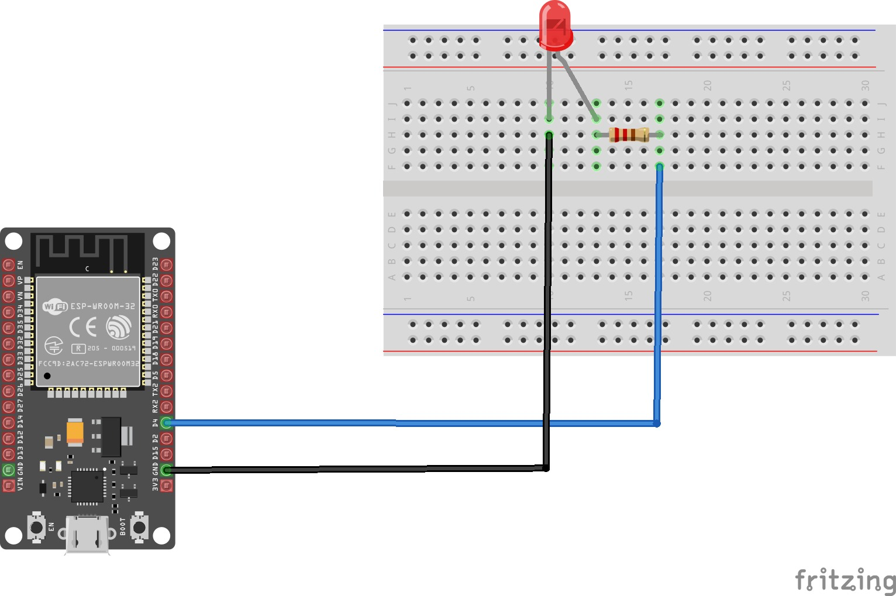
Descripción de las Conexiones
- Pin D4 (GPIO4) del ESP32 se conecta al ánodo (+) del LED mediante un cable jumper.
- El cátodo (-) del LED se conecta a un extremo de la resistencia de 220 $\Omega$.
- El otro extremo de la resistencia se conecta al bus de tierra (GND) de la protoboard.
- El pin GND del ESP32 se conecta al bus de tierra de la protoboard.
V. Código Fuente
A continuación se presenta el código completo del proyecto con explicación detallada de cada sección:
// -- Configuración ----------------------------------
const int PIN_LED = 4; // Pin GPIO donde está el LED
const int TIEMPO_ENCENDIDO = 1000; // Tiempo encendido (ms)
const int TIEMPO_APAGADO = 1000; // Tiempo apagado (ms)
// -- Setup -------------------------------------------
void setup() {
Serial.begin(115200);
Serial.println("==================================");
Serial.println(" Parpadeo de LED con el ESP32 ");
Serial.println("==================================");
// Establecemos el pin del LED como salida
pinMode(PIN_LED, OUTPUT);
// Apagamos el LED al iniciar
digitalWrite(PIN_LED, LOW);
Serial.println("> Sistema listo. Iniciando parpadeo...");
}
// -- Loop --------------------------------------------
void loop() {
// Encendemos el LED
digitalWrite(PIN_LED, HIGH);
Serial.println("LED: ENCENDIDO");
delay(TIEMPO_ENCENDIDO);
// Apagamos el LED
digitalWrite(PIN_LED, LOW);
Serial.println("LED: APAGADO");
delay(TIEMPO_APAGADO);
}Análisis del Código
- Configuración: Se definen tres constantes (
PIN_LED,TIEMPO_ENCENDIDOyTIEMPO_APAGADO) que parametrizan el comportamiento del circuito de forma modular. - setup(): Inicializa la comunicación serial a 115200 baudios, configura el pin GPIO4 como salida (
OUTPUT) y asegura que el LED inicie apagado. - loop(): Se ejecuta infinitamente encendiendo el LED enviando 3.3V al pin, imprimiendo su estado en el Monitor Serial, y pausando la ejecución por 1 segundo usando
delay(), para luego repetir el proceso apagando el LED (0V).
VI. Principio de Funcionamiento
El circuito opera bajo el principio básico de control digital de un GPIO (General Purpose Input/Output). Cuando el ESP32 escribe un valor HIGH en el pin GPIO4, este entrega aproximadamente 3.3V, permitiendo que la corriente fluya a través del LED y la resistencia. La resistencia de 220 $\Omega$ limita la corriente para evitar dañar el componente:
Este valor está dentro del rango seguro de operación tanto para el LED (máx 20mA) como para el pin del ESP32 (máx 40mA por pin).
VII. Video de Funcionamiento
VIII. Conclusiones
- El proyecto demuestra el uso correcto de los pines GPIO del ESP32 como salidas digitales para controlar dispositivos externos.
- La comunicación serial permite monitorear en tiempo real el estado del sistema, facilitando la depuración.
- El uso de constantes para definir pines y tiempos hace el código modular y fácil de modificar.
- La resistencia limitadora es esencial para proteger tanto el LED como el microcontrolador.
- Este proyecto constituye la base para circuitos más complejos como semáforos, indicadores de estado, y sistemas de alerta visual.
IX. Tabla de Ecuaciones
| Ecuación | Descripción | Enlace |
|---|---|---|
| $I = \frac{V_{gpio}-V_{led}}{R}$ | Corriente a través del LED | Ir a sección |
On/Off por Teclado
I. Introducción
Este proyecto describe de manera detallada el circuito interactivo "On/Off Keyboard", que permite al usuario controlar el encendido y apagado de un LED conectado al ESP32 mediante comandos de teclado enviados a través del Monitor Serial del Arduino IDE.
A diferencia del proyecto "On/Off Repetitivo" —donde el LED parpadea automáticamente—, en este proyecto el usuario tiene el control total: al presionar la tecla a el LED se enciende, y al presionar la tecla b el LED se apaga. Esto introduce conceptos fundamentales de comunicación serial, lectura de datos de entrada y toma de decisiones condicionales en la programación de microcontroladores.
Este proyecto sirve como segundo paso en el aprendizaje de Arduino, consolidando los conceptos de GPIO y comunicación serial mientras introduce la interacción usuario-microcontrolador en tiempo real.
II. Objetivo
Implementar un sistema de control manual de un LED utilizando el microcontrolador ESP32, donde el usuario envía comandos desde el teclado del computador a través del Monitor Serial, demostrando el uso de:
- Salidas digitales (GPIO) para controlar un actuador (LED).
- Comunicación serial bidireccional (lectura y escritura).
- Estructuras condicionales (
if / else if) para la toma de decisiones. - Lectura de caracteres individuales desde el buffer serial.
III. Materiales
| Aspecto | Cant. | Componente | Especificación |
|---|---|---|---|
| 1 | ESP32 Dev Module | Microcontrolador con Wi-Fi/Bluetooth | |
| 1 | LED (5mm) | LED difuso, $V_f \approx 2V$, $I_f \approx 20mA$ | |
| 1 | Resistencia 220 $\Omega$ | 1/4W, tolerancia 5% | |
| 1 | Protoboard | Placa de pruebas de 830 puntos | |
| 2 | Cables jumper | Macho-macho para conexiones | |
| 1 | Cable USB Micro-B | Para programación y alimentación |
IV. Esquema de Conexión
El esquema de conexión es el mismo utilizado en el proyecto "On/Off Repetitivo", ya que el hardware es idéntico; la diferencia radica exclusivamente en el software (firmware) cargado en el ESP32. El LED está conectado al pin D4 (GPIO4) del ESP32 a través de una resistencia limitadora de corriente de 220 $\Omega$.
Descripción de las Conexiones
- Pin D4 (GPIO4) del ESP32 se conecta al ánodo (+) del LED mediante un cable jumper.
- El cátodo (-) del LED se conecta a un extremo de la resistencia de 220 $\Omega$.
- El otro extremo de la resistencia se conecta al bus de tierra (GND) de la protoboard.
- El pin GND del ESP32 se conecta al bus de tierra de la protoboard.
El diagrama esquemático simplificado es: ESP32 GPIO4 → LED → R = 220 Ω → GND.
V. Código Fuente
// -- Configuración ----------------------------------
const int PIN_LED = 4;
void setup() {
Serial.begin(115200);
pinMode(PIN_LED, OUTPUT);
digitalWrite(PIN_LED, LOW);
Serial.println("Presiona 'a' para encender el LED");
Serial.println("Presiona 'b' para apagar el LED");
}
void loop() {
if (Serial.available() > 0) {
char tecla = Serial.read();
if (tecla == 'a' || tecla == 'A') {
digitalWrite(PIN_LED, HIGH);
Serial.println("LED ENCENDIDO");
} else if (tecla == 'b' || tecla == 'B') {
digitalWrite(PIN_LED, LOW);
Serial.println("LED APAGADO");
}
}
}Análisis del Código
- Encabezado y Constantes: Se define una única constante
PIN_LED = 4. Usar una constante permite cambiar fácilmente el pin sin modificar múltiples líneas de código. - setup(): Inicializa la comunicación serial a 115200 baudios, configura el pin como salida y asegura que inicie apagado. Además, envía un par de mensajes de instrucciones al usuario.
- loop(): Utiliza un modelo basado en eventos. Solo actúa cuando
Serial.available() > 0. La funciónSerial.read()lee el byte enviado, y una estructura condicionalif/else ifevalúa la tecla. La aceptación de mayúsculas y minúsculas ('a'y'A') hace el programa más robusto.
VI. Funcionamiento
El proyecto se basa en la comunicación UART (Universal Asynchronous Receiver-Transmitter) entre el ESP32 y el computador a través del cable USB. El flujo de datos es el siguiente:
- El usuario escribe un carácter en el Monitor Serial y al enviarlo se transmite como un byte ASCII.
- El chip USB-UART del ESP32 lo deposita en el buffer de recepción serial.
Serial.available()detecta datos pendientes ySerial.read()lee el byte.- El programa evalúa el carácter y activa o desactiva el GPIO, enviando la respuesta de vuelta al computador.
La corriente del LED se calcula igual que en el proyecto anterior:
VII. Comparación con On/Off Repetitivo
| Característica | On/Off Repetitivo | On/Off Keyboard |
|---|---|---|
| Tipo de control | Automático | Manual (usuario) |
Uso de delay() | Sí (bloquea ejecución) | No |
| Comunicación serial | Solo escritura | Lectura y escritura |
| Interacción del usuario | Ninguna | Envía comandos por teclado |
| Modelo de ejecución | Secuencial con pausas | Basado en eventos |
| Circuito (hardware) | Idéntico | Idéntico |
VIII. Fotografías
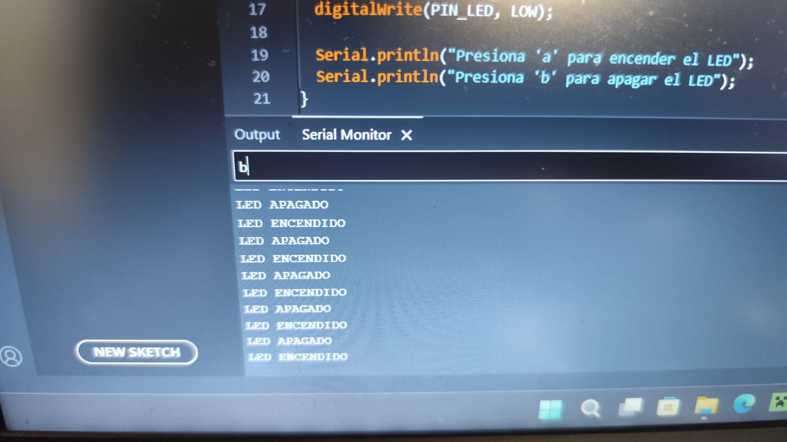
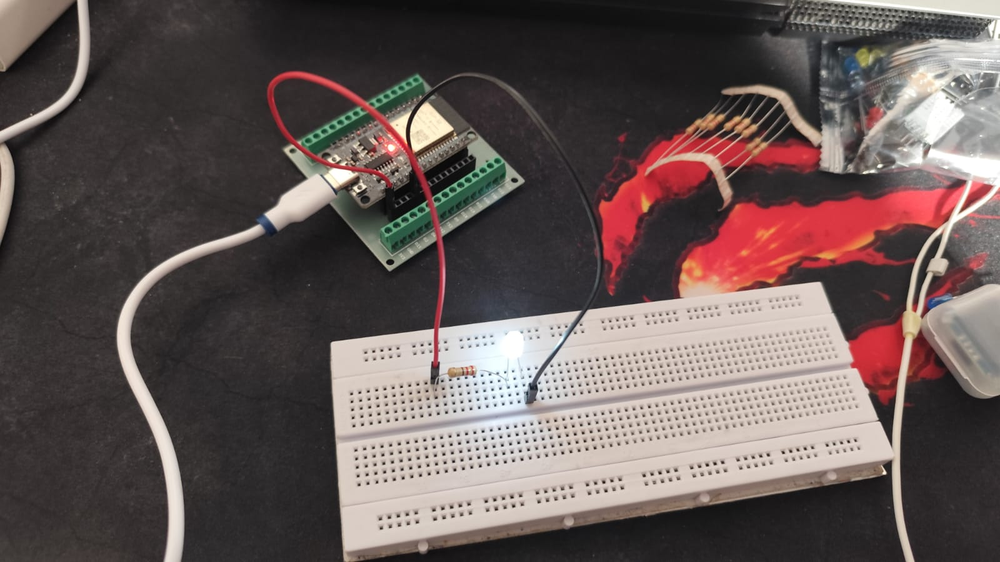
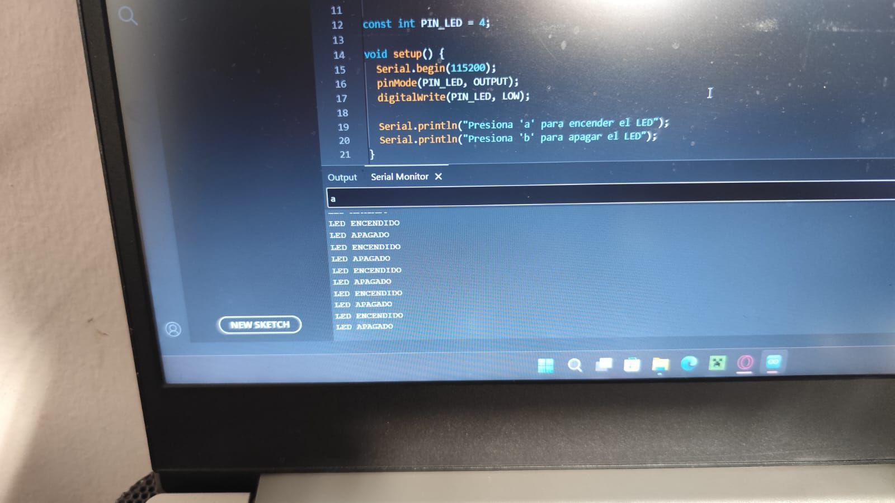
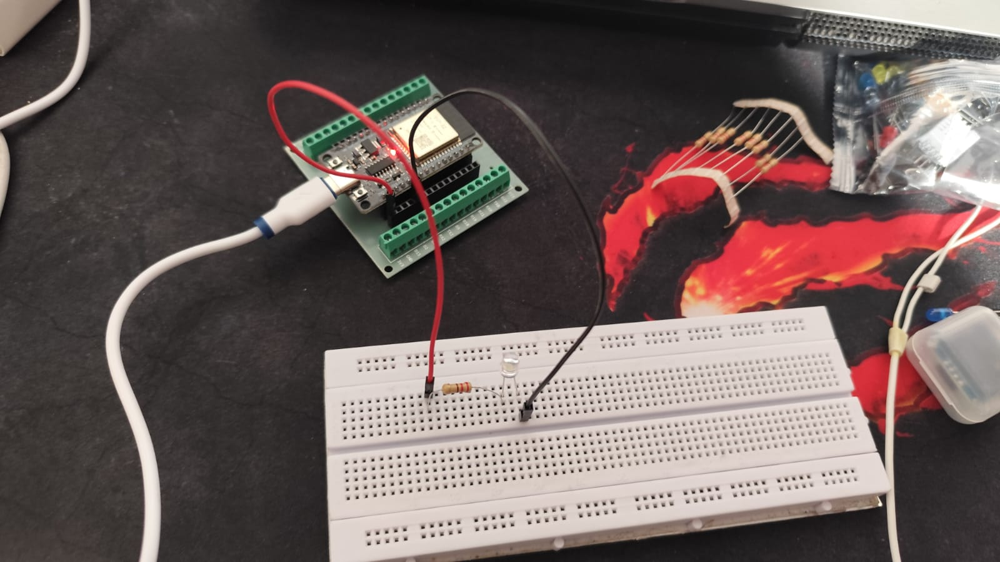
IX. Video
X. Proceso de Creación
- Diseño del circuito: Se reutilizó el esquema del proyecto "On/Off Repetitivo" (LED + resistencia en GPIO4).
- Desarrollo del firmware: Se escribió el código utilizando
Serial.available()ySerial.read(). - Configuración del IDE: Se seleccionó la placa ESP32 Dev Module y se configuró la velocidad a 115200 baudios.
- Pruebas: Se comprobó la recepción enviando
aybdesde el Monitor Serial.
XI. Conclusiones
- El proyecto demuestra cómo utilizar la comunicación serial bidireccional para crear una interfaz de control básica entre el usuario y el microcontrolador.
- La función
Serial.available()permite implementar un modelo de programación basado en eventos, evitando el uso dedelay()que bloquea la ejecución. - La lectura de caracteres con
Serial.read()y su evaluación con estructuras condicionales es el fundamento de protocolos de comunicación más complejos. - El circuito físico (hardware) es idéntico al del proyecto "On/Off Repetitivo", lo que demuestra que un mismo montaje puede tener comportamientos completamente diferentes según el software.
- La aceptación de mayúsculas y minúsculas mejora la experiencia del usuario y es una buena práctica de programación defensiva.
XII. Tabla de Ecuaciones
| Ecuación | Descripción | Enlace |
|---|---|---|
| $I = \frac{V_{gpio}-V_{led}}{R}$ | Corriente a través del LED | Ir a sección |
Control con Potenciómetro
I. Introducción
Este proyecto describe de manera detallada una práctica introductoria de electrónica analógica y digital con el microcontrolador ESP32. El sistema lee la posición angular de un potenciómetro mediante el conversor analógico-digital (ADC) del ESP32, convierte el valor leído en voltaje y en un ciclo de trabajo PWM, y utiliza este último para controlar el brillo de un LED de forma continua y proporcional.
El proyecto introduce conceptos fundamentales de lectura analógica con ADC de 12 bits, conversión de valores digitales a magnitudes físicas (voltaje), modulación por ancho de pulso (PWM) para el control de actuadores, y comunicación serial para la depuración y monitoreo de datos en tiempo real.
Se trata de una práctica ideal como primer acercamiento a la interacción entre sensores analógicos y actuadores controlados digitalmente, sentando las bases para proyectos más complejos.
II. Objetivo
Implementar un sistema de control analógico-digital utilizando el microcontrolador ESP32 que lea la posición de un potenciómetro y controle proporcionalmente el brillo de un LED, demostrando el uso de:
- Lectura de señales analógicas mediante el ADC de 12 bits del ESP32 (rango 0-4095).
- Conversión de valores digitales crudos a magnitudes físicas (voltaje en el rango 0-3.3V).
- Modulación por ancho de pulso (PWM) con la API moderna del ESP32.
- Mapeo lineal entre rangos numéricos distintos con la función
map(). - Protección de valores con la función
constrain(). - Comunicación serial para monitoreo en tiempo real de las variables del sistema.
III. Materiales
| Aspecto | Cant. | Componente | Especificación |
|---|---|---|---|
| 1 | ESP32 Dev Module | Microcontrolador dual-core con Wi-Fi/Bluetooth | |
| 1 | Potenciómetro | 10 k$\Omega$ lineal, 3 terminales | |
| 1 | LED rojo (5mm) | Diodo emisor de luz, $V_f \approx 2V$ | |
| 1 | Resistencia 220 $\Omega$ | Limitadora de corriente para el LED | |
| 1 | Protoboard | Placa de pruebas de 830 puntos | |
| Varios | Cables jumper | Macho-macho para conexiones | |
| 1 | Cable USB | Para programación y alimentación |
IV. Esquema de Conexión
El potenciómetro se conecta entre 3.3V y GND, con su terminal central (cursor) conectado a GPIO34 del ESP32. El LED se conecta a GPIO4 a través de una resistencia limitadora de 220 $\Omega$.
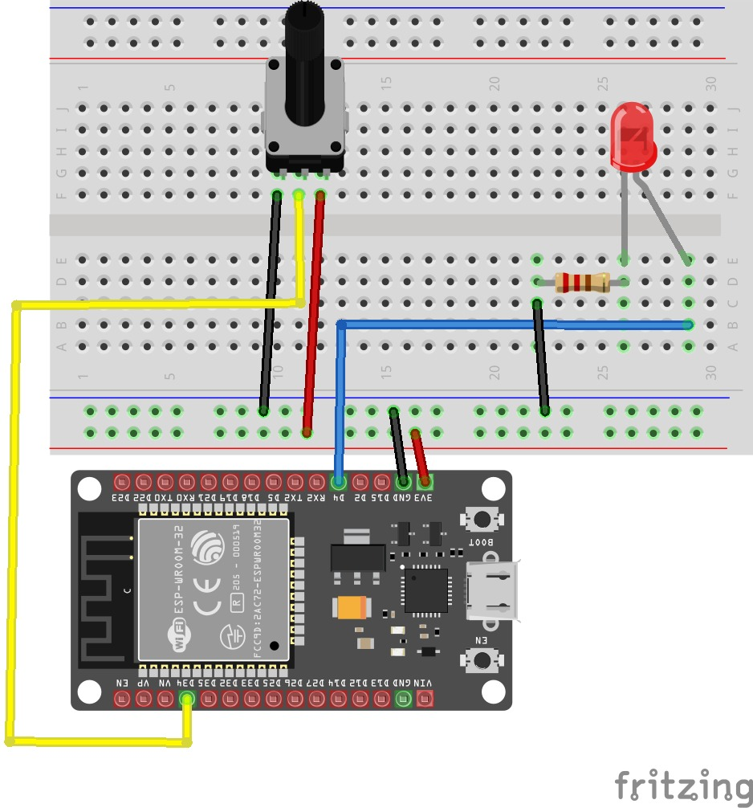
Diagrama de Conexiones
| Componente | Pin | ESP32 GPIO |
|---|---|---|
| Potenciómetro | Terminal 1 | 3.3V |
| Potenciómetro | Terminal 2 (cursor) | GPIO34 (ADC1_CH6) |
| Potenciómetro | Terminal 3 | GND |
| Resistencia 220 $\Omega$ | Terminal 1 | GPIO4 |
| LED rojo | Ánodo (+) | Resistencia 220 $\Omega$ (Terminal 2) |
| LED rojo | Cátodo (-) | GND |
Nota: El GPIO34 del ESP32 es un pin de solo entrada (input-only), lo que lo hace ideal para lectura analógica ya que no requiere funcionalidad de salida.
V. Código Fuente
// -- Configuración de pines --
const int pinPot = 34;
const int pinLed = 4;
// -- Configuración PWM --
const int pwmChannel = 0;
const int pwmFreq = 5000;
const int pwmRes = 8;
void setup() {
Serial.begin(115200);
// Configuración de la API moderna PWM
ledcSetup(pwmChannel, pwmFreq, pwmRes);
ledcAttachPin(pinLed, pwmChannel);
}
void loop() {
// PASO 1: Lectura ADC (0-4095)
int val = analogRead(pinPot);
// PASO 2: Mapeo a rango PWM (0-255)
int brightness = map(val, 0, 4095, 0, 255);
brightness = constrain(brightness, 0, 255);
// PASO 3: Escritura PWM
ledcWrite(pwmChannel, brightness);
// PASO 4: Monitoreo Serial
Serial.printf("ADC:%d PWM:%d\n", val, brightness);
delay(100);
}Análisis del Código
- Declaración de Pines: GPIO34 como entrada analógica y GPIO4 como salida PWM.
- Configuración PWM: Frecuencia a 5 kHz (suficiente para evitar flicker visible) y resolución de 8 bits (256 niveles).
- setup(): Inicializa el serial, y configura el canal PWM asociándolo al pin del LED usando
ledcAttachPin(). - loop(): Ejecuta los pasos secuenciales de lectura analógica, mapeo lineal, aplicación del PWM y monitoreo serial. El retardo previene la saturación del monitor.
VI. Funcionamiento
El potenciómetro actúa como un divisor de voltaje. Al conectar sus extremos entre 3.3V y GND, el cursor entrega un voltaje proporcional al ángulo de rotación:
El ADC de 12 bits convierte el voltaje analógico en un valor digital (0 a 4095), ofreciendo una resolución de $\Delta V = 3.3/4095 \approx 0.806\text{ mV}$ por nivel:
El valor ADC se mapea linealmente al rango PWM de 8 bits y se define un ciclo de trabajo (duty cycle) $D$ para la señal cuadrada:
La alta frecuencia del PWM (5kHz) hace que el encendido y apagado sea imperceptible, generando la ilusión de brillo continuo gracias a la persistencia retiniana.
VII. Conceptos Técnicos Clave
- API PWM del ESP32: Permite configurar fácilmente la frecuencia y resolución del canal PWM para señales precisas.
- Función map(): Realiza una interpolación lineal entre dos rangos distintos, esencial para la traducción ADC-PWM.
- Función constrain(): Limita un valor numérico a un rango seguro, sirviendo como programación defensiva para el hardware.
VIII. Fotografías
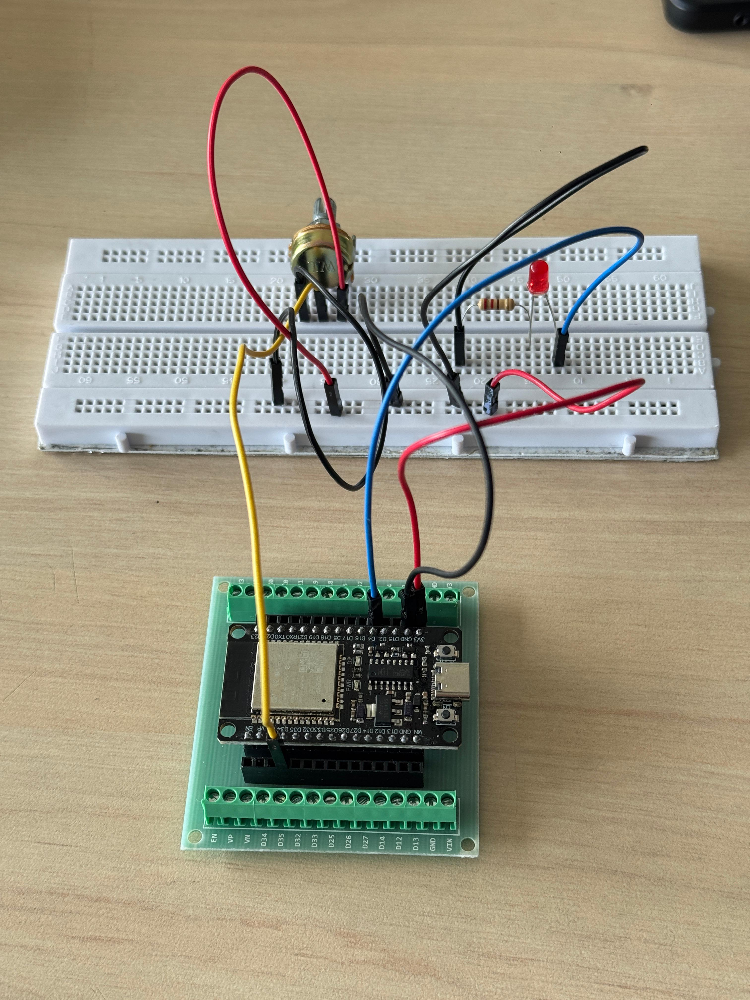
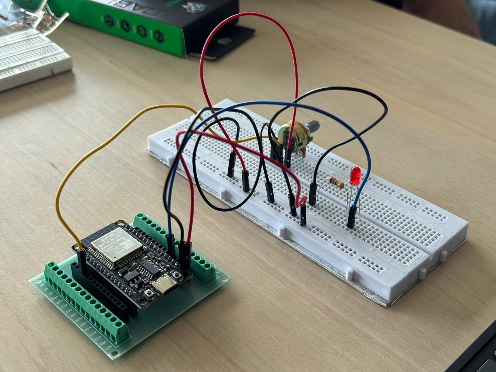
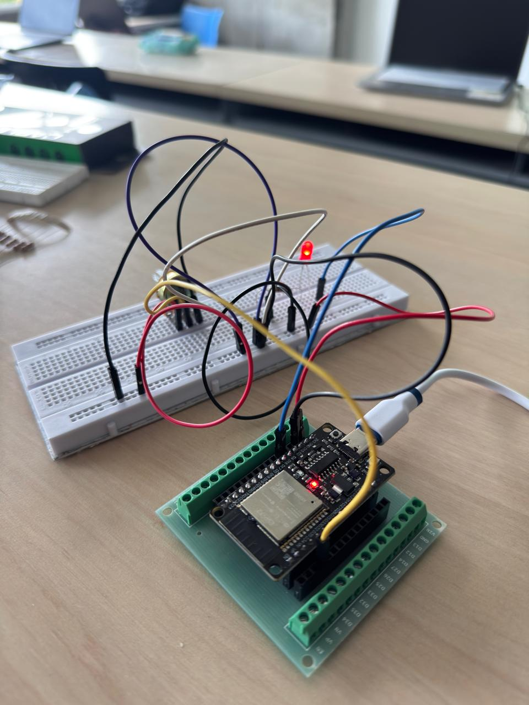
IX. Video
X. Simulación
XI. Proceso de Creación
- Selección de componentes: Se eligió un potenciómetro lineal de 10 k$\Omega$ por su respuesta proporcional. El LED rojo incluye una resistencia de 220 $\Omega$ para mantener una corriente segura ($5.9\text{mA}$).
- Diseño del circuito: Se diseñó el esquema asignando GPIO34 como entrada analógica y GPIO4 como salida PWM.
- Montaje en protoboard: Conexión física validando que el potenciómetro actúe como divisor de voltaje.
- Programación: Implementación del firmware incluyendo el mapeo de variables.
- Configuración del IDE: Se utilizó la placa ESP32 Dev Module a 115200 baudios.
- Pruebas y validación: Verificación del sistema con el monitor serial al girar la perilla.
XII. Conclusiones
- El proyecto demuestra la cadena completa de procesamiento analógico-digital: desde la lectura de un sensor hasta el control PWM.
- El ADC de 12 bits del ESP32 proporciona una resolución de $\approx 0.8\text{ mV}$ por nivel, suficiente para aplicaciones de precisión moderada.
- La modulación PWM a 5 kHz con 8 bits permite 256 niveles de brillo continuos sin parpadeo visible.
- La función
map()simplifica enormemente la conversión entre rangos numéricos. - El uso de
constrain()ilustra una excelente práctica defensiva antes de enviar comandos al hardware. - La comunicación serial sirve como una herramienta vital de depuración.
- Este proyecto sienta las bases para aplicaciones más complejas como control de motores o termorregulación.
XIII. Ecuaciones
| Ecuación | Descripción | Enlace |
|---|---|---|
| $V_{\text{cursor}}=V_{CC}\times \frac{\theta}{\theta_{\max}}$ | Divisor de voltaje | Ir a sección |
| $N_{ADC}=(V_{in}/3.3)\times 4095$ | Conversión ADC | Ir a sección |
| $D_{PWM}=N_{ADC}/4095\times 255$ | Mapeo PWM | Ir a sección |
| $D=(t_{\text{ON}}/T)\times 100\%$ | Ciclo de trabajo | Ir a sección |
Potenciómetro con Bluetooth
I. Introducción
Este proyecto describe de manera detallada una extensión del proyecto básico de potenciómetro que incorpora comunicación inalámbrica Bluetooth Classic mediante el perfil SPP (Serial Port Profile) del ESP32. El sistema lee la posición angular de un potenciómetro mediante el ADC del ESP32, controla el brillo de un LED proporcionalmente mediante PWM, y transmite los datos en tiempo real a un dispositivo móvil a través de Bluetooth, utilizando la aplicación Serial Bluetooth Terminal.
Este proyecto añade una capa de comunicación inalámbrica al control analógico-digital básico, permitiendo al usuario monitorear remotamente los valores del sensor desde un teléfono celular sin necesidad de estar conectado físicamente al computador. Se introducen los conceptos de Bluetooth Classic SPP, la librería BluetoothSerial.h del ESP32, y la transmisión dual de datos (simultáneamente por USB serial y por Bluetooth).
II. Objetivo
Implementar un sistema de control analógico-digital con monitoreo inalámbrico utilizando el ESP32 que:
- Lea la posición de un potenciómetro mediante el ADC de 12 bits (rango 0-4095).
- Convierta los valores digitales a voltaje (rango 0-3.3V).
- Controle proporcionalmente el brillo de un LED mediante PWM de 8 bits.
- Transmita los datos simultáneamente por USB Serial (al computador) y por Bluetooth Serial (al celular).
- Permita la conexión inalámbrica desde la aplicación Serial Bluetooth Terminal usando el nombre de dispositivo "EQUIPO_MARAVILLA".
III. Materiales
| Aspecto | Cant. | Componente | Especificación |
|---|---|---|---|
| 1 | ESP32 Dev Module | Microcontrolador dual-core con Wi-Fi/Bluetooth | |
| 1 | Potenciómetro | 10 k$\Omega$ lineal, 3 terminales | |
| 1 | LED rojo | Diodo emisor de luz, 5mm | |
| 1 | Resistencia 220 $\Omega$ | Limitadora de corriente para el LED | |
| 1 | Protoboard | Placa de pruebas de 830 puntos | |
| Varios | Cables jumper | Macho-macho para conexiones | |
| 1 | Cable USB | Para programación y alimentación | |
| 1 | Teléfono celular | Con Bluetooth y app Serial Bluetooth Terminal |
IV. Esquema de Conexión
El circuito utiliza el mismo esquema de conexión que el proyecto básico de potenciómetro. El potenciómetro se conecta como divisor de voltaje entre 3.3V y GND, con su cursor en GPIO34. El LED se conecta a GPIO4 mediante una resistencia de 220 $\Omega$. La comunicación Bluetooth no requiere hardware adicional, ya que el ESP32 integra el módulo de radio en el propio chip.
Diagrama de Conexiones
| Componente | Pin | ESP32 GPIO |
|---|---|---|
| Potenciómetro | Terminal 1 | 3.3V |
| Potenciómetro | Terminal 2 (cursor) | GPIO34 (ADC1_CH6) |
| Potenciómetro | Terminal 3 | GND |
| Resistencia 220 $\Omega$ | Terminal 1 | GPIO4 |
| LED rojo | Ánodo (+) | Resistencia 220 $\Omega$ (Terminal 2) |
| LED rojo | Cátodo (-) | GND |
Nota importante: A diferencia de módulos Bluetooth externos (como el HC-05), el ESP32 integra el controlador Bluetooth directamente en su SoC, por lo que no se requieren conexiones adicionales para la funcionalidad inalámbrica. El módulo de radio comparte la antena PCB impresa en la placa de desarrollo.
V. Código Fuente
#include "BluetoothSerial.h"
// Objeto Bluetooth
BluetoothSerial BT;
const int pinPotenciometro = 34;
const int pinLED = 4;
const int frecuenciaPWM = 5000;
const int resolucionPWM = 8;
const int canalPWM = 0;
void setup() {
Serial.begin(115200);
BT.begin("EQUIPO_MARAVILLA");
pinMode(pinPotenciometro, INPUT);
ledcSetup(canalPWM, frecuenciaPWM, resolucionPWM);
ledcAttachPin(pinLED, canalPWM);
Serial.println("Bluetooth iniciado. Conectate a 'EQUIPO_MARAVILLA'");
}
void loop() {
int valor = analogRead(pinPotenciometro);
float voltaje = valor * (3.3 / 4095.0);
int brillo = map(valor, 0, 4095, 0, 255);
ledcWrite(canalPWM, brillo);
String mensaje = "Valor: " + String(valor) +
" Voltaje: " + String(voltaje, 2) + " V" +
" Brillo: " + String(brillo);
// Transmision dual de datos
Serial.println(mensaje);
BT.println(mensaje);
delay(300);
}Análisis del Código
- Inclusión de la Librería Bluetooth: Se incluye
BluetoothSerial.hy se crea la instanciaBTpara manejar la comunicación de forma idéntica aSerial. - setup(): Además de inicializar el ADC y PWM, se ejecuta
BT.begin("EQUIPO_MARAVILLA"), haciendo visible el ESP32 para el emparejamiento. - loop(): Se ejecutan los pasos básicos de lectura (ADC), conversión a voltaje, mapeo (PWM) y construcción de un mensaje
String. - Transmisión Dual: El mensaje se envía mediante
Serial.println()yBT.println(), transmitiendo la información simultáneamente al PC y al celular.
VI. Funcionamiento
El proyecto implementa una transmisión dual. Los datos fluyen desde el potenciómetro hasta el PWM y en paralelo hacia los canales de monitoreo:
Potenciómetro ADC 12-bit Mapeo PWM 8-bit
(ángulo) ─────> (0 - 4095) ─────> map() ─────> (0 - 255)
0° - 270° voltaje brillo duty cycle
0 - 3.3 V 0% - 100%
│
┌────────────────────────────┤
v v
Bluetooth SPP Brillo del LED
(al celular vía app)
│
v
USB Serial
(al monitor del Arduino IDE)
El potenciómetro actúa como un divisor de voltaje:
El ciclo de trabajo controla el brillo percibido del LED:
VII. Conceptos Técnicos Clave
- Bluetooth Classic vs BLE: Este proyecto usa Bluetooth Classic con el perfil SPP (Serial Port Profile). Aunque consume más energía que BLE (Bluetooth Low Energy), su API (
BluetoothSerial.h) es idéntica a la claseSerial, lo que facilita enormemente la implementación. - Impacto en Memoria Flash: El stack de Bluetooth Classic es pesado. Incluir la librería consume cerca de 1.8MB de Flash (aprox. 98% del espacio de programa estándar disponible en la partición por defecto del ESP32).
VIII. Fotografías
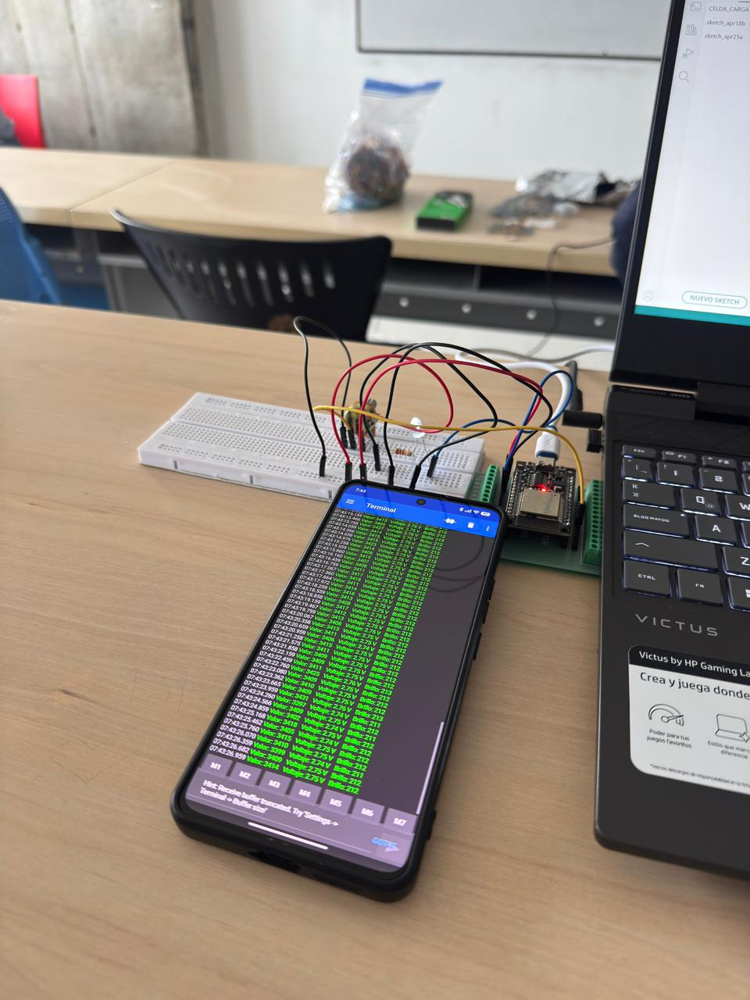
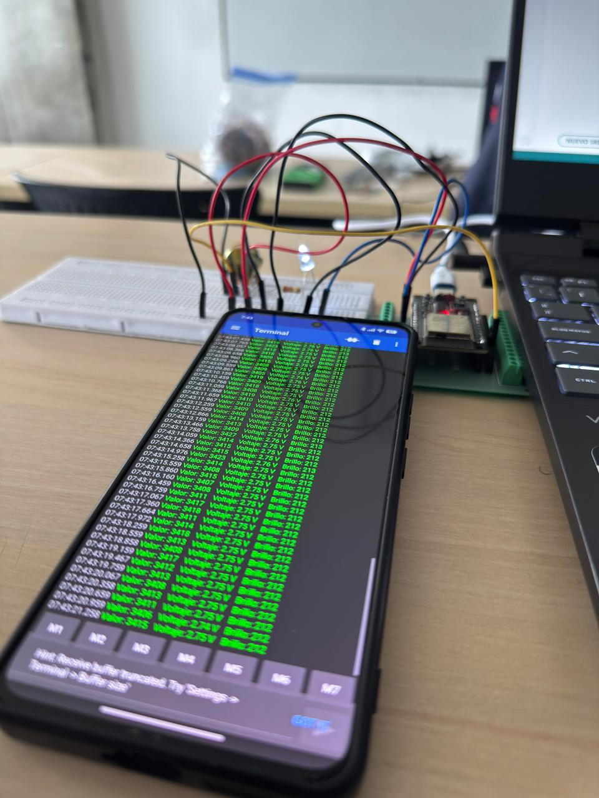
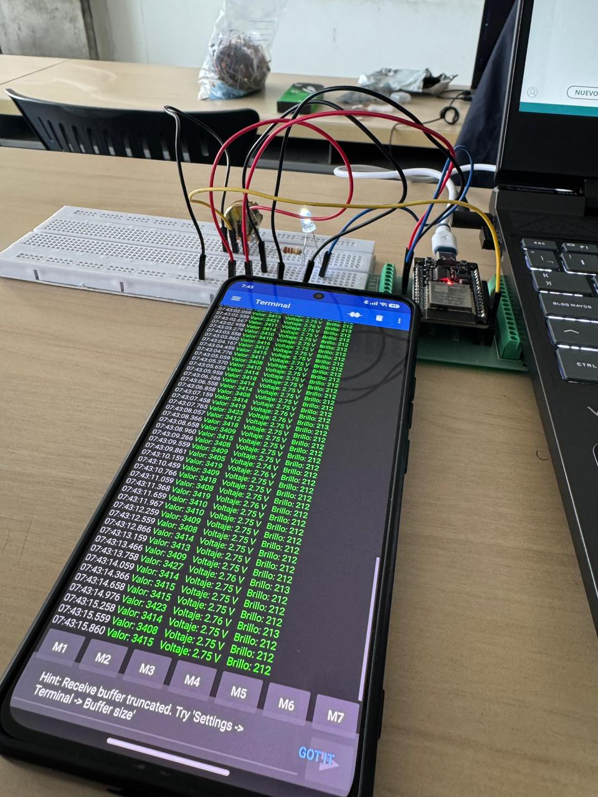
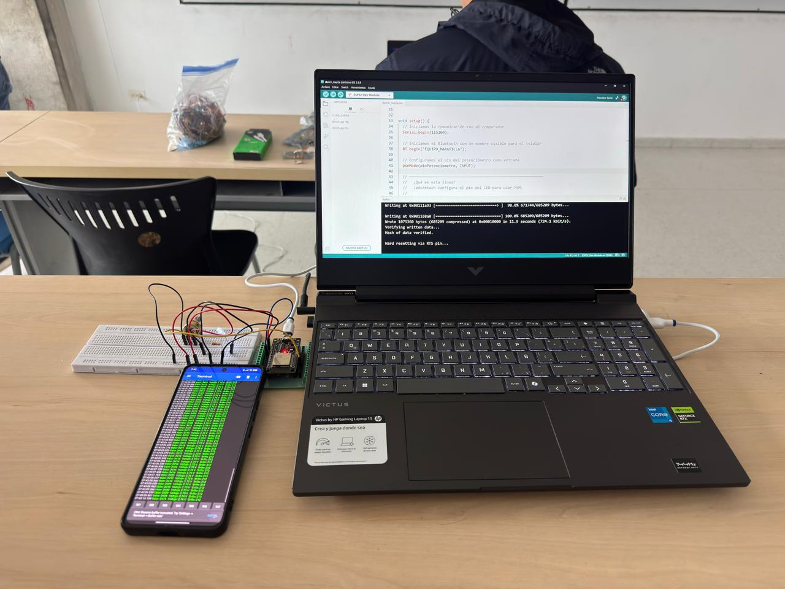
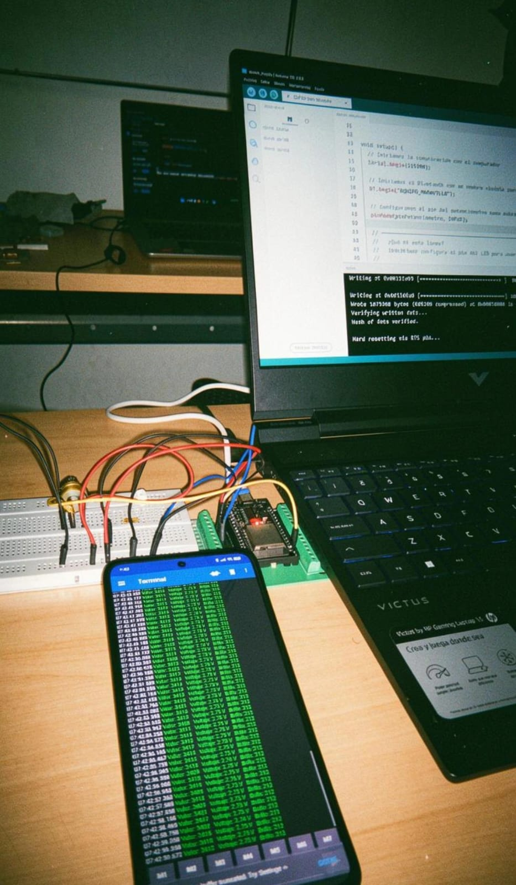
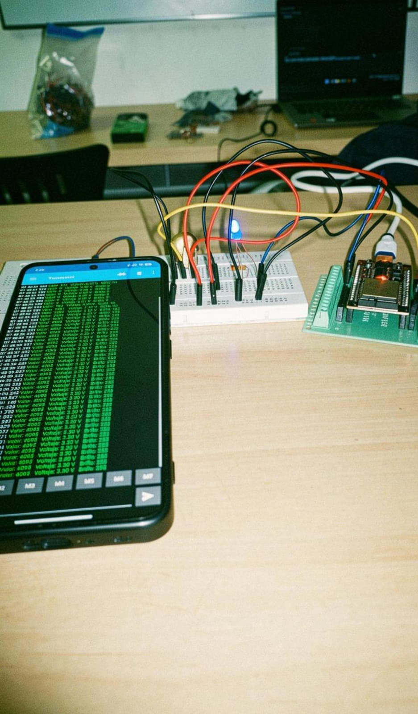
IX. Video
X. Proceso de Creación
- Punto de partida: Se tomó como base el proyecto "Control con Potenciómetro" (sin Bluetooth).
- Incorporación de la librería Bluetooth: Se añadió
#include "BluetoothSerial.h"y se instanció el objetoBT. - Inicialización del Bluetooth: En
setup(), se definió el nombre de emparejamientoEQUIPO_MARAVILLA. - Transmisión dual: En
loop(), se duplicó la funciónSerial.println()conBT.println(). - Preparación del celular: Instalación de Serial Bluetooth Terminal, emparejamiento con el ESP32, y conexión SPP.
- Pruebas y validación: Verificación de datos sincronizados entre el monitor del PC, la pantalla del celular y el brillo del LED.
XI. Diferencias con el Proyecto Base
| Característica | Proyecto Base | Con Bluetooth |
|---|---|---|
| Lectura ADC | Sí | Sí |
| Control PWM | Sí | Sí |
| Monitoreo USB Serial | Sí | Sí |
| Comunicación Bluetooth | No | Sí |
| Monitoreo desde celular | No | Sí |
| Librería BluetoothSerial | No | Sí |
| Hardware extra requerido | Ninguno | Ninguno |
XII. Conclusiones
- El proyecto demuestra cómo extender un sistema de control analógico-digital con comunicación inalámbrica Bluetooth Classic, añadiendo apenas tres líneas de código al proyecto base.
- La librería
BluetoothSerial.hdel ESP32 simplifica enormemente la implementación de comunicación inalámbrica, proporcionando una API idéntica a la comunicación serial por cable. - La transmisión dual (USB + Bluetooth) permite depuración local y monitoreo remoto simultáneos, una arquitectura útil en aplicaciones IoT.
- El ESP32 no requiere hardware Bluetooth externo, a diferencia de plataformas como Arduino UNO que necesitan módulos HC-05/HC-06.
- La app Serial Bluetooth Terminal proporciona una interfaz práctica para visualizar datos en tiempo real con timestamps.
- El consumo de memoria Flash es significativo ($\sim$98\%) debido al stack Bluetooth, lo que debe considerarse al planificar funcionalidades adicionales.
- Este proyecto sienta las bases para aplicaciones más avanzadas como control remoto bidireccional, registro de datos (data logging) inalámbrico y sistemas de telemetría portátiles.
XIII. Ecuaciones
| Ecuación | Descripción | Enlace |
|---|---|---|
| $V_{\text{cursor}}=V_{CC}\times \frac{\theta}{\theta_{\max}}$ | Divisor de voltaje | Ir a sección |
| $D=(t_{\text{ON}}/T)\times 100\%$ | Ciclo de trabajo PWM | Ir a sección |
Potenciómetro con WiFi
I. Introducción
Este documento describe el proyecto "Control de LED y Monitoreo de Potenciómetro vía WiFi", que convierte el ESP32 en un servidor web local capaz de servir una página HTML completa con interfaz gráfica interactiva. El sistema permite encender y apagar un LED desde el navegador mediante un interruptor estilo industrial, y simultáneamente monitorear en tiempo real el voltaje de un potenciómetro a través de un gauge (medidor tipo reloj) generado con Google Charts.
A diferencia de los proyectos anteriores que utilizaban comunicación serial o Bluetooth, este proyecto introduce el paradigma de Internet de las Cosas (IoT): el ESP32 se conecta a una red WiFi existente, obtiene una dirección IP y sirve una aplicación web completa accesible desde cualquier dispositivo conectado a la misma red. La página web se almacena en la memoria Flash del ESP32 mediante la directiva PROGMEM y utiliza tecnologías web modernas como CSS3, JavaScript asíncrono y la API Fetch para comunicarse con el microcontrolador.
II. Objetivo
Implementar un sistema IoT con servidor web embebido en el ESP32 que:
- Conecte el ESP32 a una red WiFi doméstica como cliente (modo estación).
- Sirva una página web completa con HTML, CSS y JavaScript desde la memoria Flash.
- Permita encender y apagar un LED mediante un interruptor visual en el navegador.
- Lea continuamente el potenciómetro (GPIO34) y exponga los datos como API REST en formato JSON.
- Muestre un gauge de voltaje en tiempo real usando Google Charts.
- Presente los valores numéricos de ADC, voltaje y porcentaje actualizados cada 500 ms.
- Sea accesible desde cualquier dispositivo (computador, celular, tablet) en la misma red.
III. Materiales
| Aspecto | Cant. | Componente | Especificación |
|---|---|---|---|
| 1 | ESP32 Dev Module | Microcontrolador dual-core con Wi-Fi/Bluetooth | |
| 1 | Potenciómetro | 10 k$\Omega$ lineal, 3 terminales | |
| 1 | LED rojo | Diodo emisor de luz, 5mm | |
| 1 | Resistencia 220 $\Omega$ | Limitadora de corriente para el LED | |
| 1 | Protoboard | Placa de pruebas de 830 puntos | |
| Varios | Cables jumper | Macho-macho para conexiones | |
| 1 | Cable USB | Para programación y alimentación | |
| 1 | Red WiFi | Router con acceso a la red local | |
| 1 | Navegador web | Chrome, Firefox o cualquier navegador moderno |
IV. Esquema de Conexión
El circuito es idéntico al de los proyectos anteriores de potenciómetro. El potenciómetro se conecta como divisor de voltaje entre 3.3V y GND, con su cursor en GPIO34 (entrada analógica). El LED se conecta a GPIO4 a través de una resistencia de 220 $\Omega$. La comunicación WiFi no requiere hardware adicional ya que el ESP32 integra el módulo de radio en el propio chip.
Diagrama de Conexiones
| Componente | Pin | ESP32 GPIO |
|---|---|---|
| Potenciómetro | Terminal 1 | 3.3V |
| Potenciómetro | Terminal 2 (cursor) | GPIO34 (ADC1_CH6) |
| Potenciómetro | Terminal 3 | GND |
| Resistencia 220 $\Omega$ | Terminal 1 | GPIO4 |
| LED rojo | Ánodo (+) | Resistencia 220 $\Omega$ (Terminal 2) |
| LED rojo | Cátodo (-) | GND |
Nota: A diferencia de los proyectos con Bluetooth, en este caso el ESP32 utiliza su módulo WiFi integrado para crear un servidor web accesible desde la red local. No se requiere ningún componente adicional para la conectividad inalámbrica.
V. Código Fuente
El código fuente combina firmware C++ con HTML/CSS/JS embebido. (Se omite el string literal de la web por brevedad).
#include <WiFi.h>
#include <WebServer.h>
const char* miSSID = "WIFI_SSID";
const char* miPASSWORD = "WIFI_PASSWORD";
WebServer servidor(80);
const int pinPotenciometro = 34;
const int pinLED = 4;
bool ledEncendido = false;
// La página web se guarda en la memoria Flash (PROGMEM)
const char paginaWeb[] PROGMEM = R"=====(
<!DOCTYPE html>
<html>
<!-- HTML, CSS y JS con Google Charts y Fetch API aquí -->
</html>
)=====";
void manejarRaiz() {
servidor.send_P(200, "text/html", paginaWeb);
}
void manejarDatos() {
int valorADC = analogRead(pinPotenciometro);
float voltaje = valorADC * (3.3 / 4095.0);
int porcentaje = map(valorADC, 0, 4095, 0, 100);
String json = "{\"adc\":" + String(valorADC) +
", \"voltaje\":" + String(voltaje, 2) +
", \"porcentaje\":" + String(porcentaje) + "}";
servidor.send(200, "application/json", json);
}
void manejarLED() {
if (servidor.hasArg("estado")) {
String estado = servidor.arg("estado");
if (estado == "on") {
digitalWrite(pinLED, HIGH);
ledEncendido = true;
} else if (estado == "off") {
digitalWrite(pinLED, LOW);
ledEncendido = false;
}
}
servidor.send(200, "text/plain", "OK");
}
void setup() {
pinMode(pinLED, OUTPUT);
pinMode(pinPotenciometro, INPUT);
WiFi.begin(miSSID, miPASSWORD);
while (WiFi.status() != WL_CONNECTED) { delay(500); }
servidor.on("/", manejarRaiz);
servidor.on("/datos", manejarDatos);
servidor.on("/led", manejarLED);
servidor.begin();
}
void loop() {
servidor.handleClient();
}📄 Mostrar código completo de la página web (HTML/CSS/JS en PROGMEM)
<!DOCTYPE html>
<html lang="es">
<head>
<meta charset="UTF-8">
<meta name="viewport" content="width=device-width, initial-scale=1.0">
<title>ESP32 - Control y Monitor</title>
<!-- Cargar Google Charts (para el gauge) -->
<script src="https://www.gstatic.com/charts/loader.js"></script>
<style>
* { margin: 0; padding: 0; box-sizing: border-box; }
body {
font-family: 'Segoe UI', system-ui, sans-serif;
background: linear-gradient(135deg, #0A2540 0%, #1E3A8A 100%);
min-height: 100vh;
color: white;
padding: 20px;
}
.contenedor {
max-width: 900px;
margin: 0 auto;
}
h1 {
text-align: center;
font-size: 2rem;
margin-bottom: 10px;
color: #FEF3C7;
}
.subtitulo {
text-align: center;
font-style: italic;
color: #DBEAFE;
margin-bottom: 30px;
}
.paneles {
display: grid;
grid-template-columns: 1fr 1fr;
gap: 25px;
margin-bottom: 25px;
}
@media (max-width: 700px) {
.paneles { grid-template-columns: 1fr; }
}
.panel {
background: rgba(255, 255, 255, 0.08);
backdrop-filter: blur(10px);
border: 1px solid rgba(212, 175, 55, 0.3);
border-radius: 16px;
padding: 30px;
box-shadow: 0 8px 32px rgba(0, 0, 0, 0.3);
}
.panel h2 {
color: #D4AF37;
margin-bottom: 20px;
text-align: center;
font-size: 1.3rem;
}
/* ═══ Interruptor estilo industrial (Uiverse - Nawsome) ═══ */
.switch-wrapper {
display: flex;
justify-content: center;
align-items: center;
padding: 20px 0;
}
.switch {
display: block;
background-color: black;
width: 150px;
height: 195px;
box-shadow: 0 0 10px 2px rgba(0, 0, 0, 0.2),
0 0 1px 2px black,
inset 0 2px 2px -2px white,
inset 0 0 2px 15px #47434c,
inset 0 0 2px 22px black;
border-radius: 5px;
padding: 20px;
perspective: 700px;
}
.switch input { display: none; }
.switch input:checked + .button {
transform: translateZ(20px) rotateX(25deg);
box-shadow: 0 -10px 20px #ff1818;
}
.switch input:checked + .button .light {
animation: flicker 0.2s infinite 0.3s;
}
.switch input:checked + .button .shine { opacity: 1; }
.switch input:checked + .button .shadow { opacity: 0; }
.switch .button {
display: block;
transition: all 0.3s cubic-bezier(1, 0, 1, 1);
transform-origin: center center -20px;
transform: translateZ(20px) rotateX(-25deg);
transform-style: preserve-3d;
background-color: #9b0621;
height: 100%;
position: relative;
cursor: pointer;
background: linear-gradient(#980000 0%, #6f0000 30%, #6f0000 70%, #980000 100%);
background-repeat: no-repeat;
}
.switch .button::before {
content: "";
background: linear-gradient(rgba(255,255,255,0.8) 10%, rgba(255,255,255,0.3) 30%, #650000 75%, #320000) 50% 50%/97% 97%, #b10000;
background-repeat: no-repeat;
width: 100%;
height: 50px;
transform-origin: top;
transform: rotateX(-90deg);
position: absolute;
top: 0;
}
.switch .button::after {
content: "";
background-image: linear-gradient(#650000, #320000);
width: 100%;
height: 50px;
transform-origin: top;
transform: translateY(50px) rotateX(-90deg);
position: absolute;
bottom: 0;
box-shadow: 0 50px 8px 0px black, 0 80px 20px 0px rgba(0,0,0,0.5);
}
.switch .light {
opacity: 0;
animation: light-off 1s;
position: absolute;
width: 100%;
height: 100%;
background-image: radial-gradient(#ffc97e, #ff1818 40%, transparent 70%);
}
.switch .dots {
position: absolute;
width: 100%;
height: 100%;
background-image: radial-gradient(transparent 30%, rgba(101, 0, 0, 0.7) 70%);
background-size: 10px 10px;
}
.switch .characters {
position: absolute;
width: 100%;
height: 100%;
background: linear-gradient(white, white) 50% 20%/5% 20%,
radial-gradient(circle, transparent 50%, white 52%, white 70%, transparent 72%) 50% 80%/33% 25%;
background-repeat: no-repeat;
}
.switch .shine {
transition: all 0.3s cubic-bezier(1, 0, 1, 1);
opacity: 0.3;
position: absolute;
width: 100%;
height: 100%;
background: linear-gradient(white, transparent 3%) 50% 50%/97% 97%,
linear-gradient(rgba(255,255,255,0.5), transparent 50%, transparent 80%, rgba(255,255,255,0.5)) 50% 50%/97% 97%;
background-repeat: no-repeat;
}
.switch .shadow {
transition: all 0.3s cubic-bezier(1, 0, 1, 1);
opacity: 1;
position: absolute;
width: 100%;
height: 100%;
background: linear-gradient(transparent 70%, rgba(0,0,0,0.8));
background-repeat: no-repeat;
}
@keyframes flicker {
0% { opacity: 1; }
80% { opacity: 0.8; }
100% { opacity: 1; }
}
@keyframes light-off {
0% { opacity: 1; }
80% { opacity: 0; }
}
/* ═══ Estado del LED (texto bajo el switch) ═══ */
.estado-led {
text-align: center;
margin-top: 15px;
font-size: 1.1rem;
font-weight: bold;
letter-spacing: 1px;
}
.estado-encendido { color: #FCA5A5; text-shadow: 0 0 10px #DC2626; }
.estado-apagado { color: #9CA3AF; }
/* ═══ Gauge ═══ */
#gauge {
display: flex;
justify-content: center;
align-items: center;
min-height: 200px;
}
/* ═══ Datos numéricos ═══ */
.datos {
background: rgba(255, 255, 255, 0.08);
backdrop-filter: blur(10px);
border: 1px solid rgba(212, 175, 55, 0.3);
border-radius: 16px;
padding: 25px;
display: grid;
grid-template-columns: repeat(3, 1fr);
gap: 20px;
}
@media (max-width: 600px) {
.datos { grid-template-columns: 1fr; }
}
.dato {
text-align: center;
}
.dato .etiqueta {
font-size: 0.9rem;
color: #DBEAFE;
text-transform: uppercase;
letter-spacing: 1px;
margin-bottom: 8px;
}
.dato .valor {
font-size: 2.2rem;
font-weight: bold;
color: #D4AF37;
font-variant-numeric: tabular-nums;
}
.dato .unidad {
font-size: 1rem;
color: #9CA3AF;
margin-left: 4px;
}
.pie {
text-align: center;
margin-top: 30px;
font-size: 0.9rem;
color: rgba(255, 255, 255, 0.6);
}
</style>
</head>
<body>
<div class="contenedor">
<h1>🔌 ESP32 — Control y Monitoreo</h1>
<p class="subtitulo">Servidor web local con WiFi</p>
<div class="paneles">
<!-- Panel del interruptor del LED -->
<div class="panel">
<h2>Control del LED</h2>
<div class="switch-wrapper">
<label class="switch">
<input type="checkbox" id="switchLED">
<div class="button">
<div class="light"></div>
<div class="dots"></div>
<div class="characters"></div>
<div class="shine"></div>
<div class="shadow"></div>
</div>
</label>
</div>
<div class="estado-led estado-apagado" id="estadoLED">LED APAGADO</div>
</div>
<!-- Panel del gauge -->
<div class="panel">
<h2>Lectura del Potenciómetro</h2>
<div id="gauge"></div>
</div>
</div>
<!-- Panel inferior con datos numéricos -->
<div class="datos">
<div class="dato">
<div class="etiqueta">Valor ADC</div>
<div class="valor"><span id="valorADC">0</span></div>
</div>
<div class="dato">
<div class="etiqueta">Voltaje</div>
<div class="valor"><span id="valorVoltaje">0.00</span><span class="unidad">V</span></div>
</div>
<div class="dato">
<div class="etiqueta">Porcentaje</div>
<div class="valor"><span id="valorPorcentaje">0</span><span class="unidad">%</span></div>
</div>
</div>
<p class="pie">Msc. Néstor Fabio Montoya Palacios — iemauxicartago.edu.co/Fisica/</p>
</div>
<script>
// ─── Variables globales del Gauge ───
let gauge = null;
let datosGauge = null;
// ─── Inicializar Google Charts ───
google.charts.load('current', { packages: ['gauge'] });
google.charts.setOnLoadCallback(iniciarGauge);
function iniciarGauge() {
datosGauge = google.visualization.arrayToDataTable([
['Etiqueta', 'Valor'],
['Voltaje', 0]
]);
const opciones = {
width: 320, height: 320,
min: 0, max: 3.3,
redFrom: 2.7, redTo: 3.3,
yellowFrom: 1.8, yellowTo: 2.7,
greenFrom: 0, greenTo: 1.8,
minorTicks: 5,
majorTicks: ['0', '0.66', '1.32', '1.98', '2.64', '3.3']
};
gauge = new google.visualization.Gauge(document.getElementById('gauge'));
gauge.draw(datosGauge, opciones);
// Comenzar a leer datos cada 500 ms
setInterval(actualizarDatos, 500);
}
// ─── Pedir datos al ESP32 cada 500 ms ───
function actualizarDatos() {
fetch('/datos')
.then(respuesta => respuesta.json())
.then(datos => {
// Actualizar el gauge con el voltaje
datosGauge.setValue(0, 1, datos.voltaje);
gauge.draw(datosGauge);
// Actualizar números
document.getElementById('valorADC').textContent = datos.adc;
document.getElementById('valorVoltaje').textContent = datos.voltaje.toFixed(2);
document.getElementById('valorPorcentaje').textContent = datos.porcentaje;
})
.catch(error => console.error('Error al leer datos:', error));
}
// ─── Manejar el interruptor del LED ───
document.getElementById('switchLED').addEventListener('change', function() {
const encendido = this.checked;
const estado = document.getElementById('estadoLED');
// Enviar al ESP32 el nuevo estado
fetch('/led?estado=' + (encendido ? 'on' : 'off'))
.then(respuesta => respuesta.text())
.then(() => {
if (encendido) {
estado.textContent = '⚡ LED ENCENDIDO';
estado.className = 'estado-led estado-encendido';
} else {
estado.textContent = 'LED APAGADO';
estado.className = 'estado-led estado-apagado';
}
})
.catch(error => console.error('Error al cambiar LED:', error));
});
</script>
</body>
</html>Análisis del Código
- Librerías y WiFi: Usa
WiFi.hpara conectarse al router como modo Estación yWebServer.hpara levantar el servidor en el puerto 80. - Página Embebida (PROGMEM): Almacena toda la web (con CSS glassmorphism y Google Charts JS) en la Flash mediante
PROGMEMpara ahorrar RAM. - API REST JSON: Expone 3 rutas:
/para la página,/datospara enviar el ADC como JSON, y/ledpara leer parámetros (?estado=on) y cambiar el GPIO. - loop(): Extremadamente limpio;
servidor.handleClient()atiende asíncronamente las solicitudes HTTP.
VI. Funcionamiento
El proyecto implementa una arquitectura cliente-servidor HTTP donde el navegador hace solicitudes asíncronas con fetch():
Potenciómetro ADC 12-bit JSON API Navegador
(ángulo) ────> (0 - 4095) ────> /datos ────> fetch() JS
0° - 270° voltaje HTTP GET Google Charts
0 - 3.3 V Gauge + datos
│
┌─────────────────────────────┤
v v
Interruptor web Gauge de voltaje
(fetch /led?estado=) + valores numéricos
│
v
digitalWrite()
(GPIO4: LED on/off)
Las ecuaciones involucradas en la lectura del ADC y porcentaje enviado en el JSON son:
El gauge de Google Charts se divide visualmente en 3 zonas (Verde: 0-1.8V, Amarillo: 1.8-2.7V, Rojo: 2.7-3.3V).
VII. Conceptos Técnicos Clave
- PROGMEM y Raw String Literals: La directiva
PROGMEMguarda el texto en la Flash y no en RAM. La sintaxis de C++R"=====(...)====="permite escribir HTML puro sin escapar las comillas dobles. - Comunicación Asíncrona (Fetch API): El JS usa
setInterval()cada 500ms para llamar afetch('/datos')y actualizar la aguja sin que la página sufra un "refresh" molesto. - Modo Estación (STA): El ESP32 no crea una red nueva (AP), sino que se une como cliente al router local, de modo que tu PC y el ESP32 están en la misma subred.
VIII. Fotografías
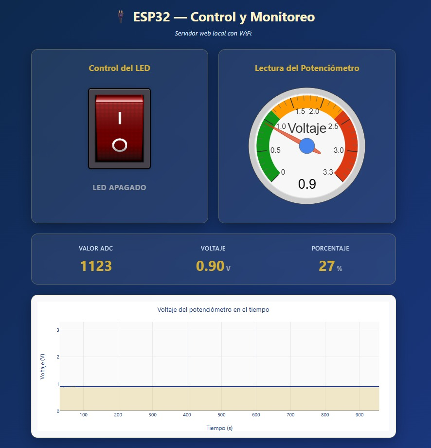
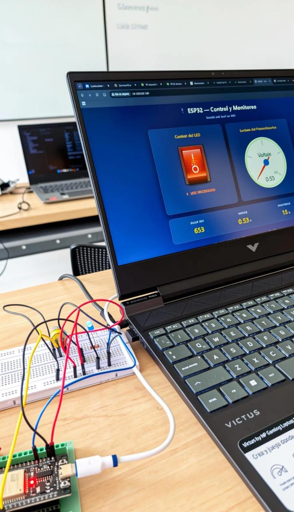
IX. Video
X. Proceso de Creación
- Punto de partida: Lectura del potenciómetro sin comunicación inalámbrica.
- Configuración WiFi: Importación de
WiFi.hy conexión al router doméstico con asignación DHCP. - Diseño Web Frontend: Se programó una página moderna usando glassmorphism CSS y un botón 3D realista con efectos hover/active.
- Integración Google Charts: Se escribió código JS para inyectar la librería de Google y dibujar el gauge en el
<div>respectivo. - Integración al Firmware: Uso de string literals y PROGMEM para guardar todo el código web de forma segura en C++.
- Backend REST: Desarrollo de las rutas
/datosy/ledcon parseo de URL y generación de JSON.
XI. Diferencias con Proyectos Anteriores
| Característica | Base | Bluetooth | WiFi (este) |
|---|---|---|---|
| Lectura ADC | Sí | Sí | Sí |
| Control del LED | PWM | PWM | On/Off digital |
| Comunicación Inalámbrica | No | Bluetooth SPP | WiFi HTTP |
| Interfaz | Monitor serial | App BT Terminal | Página web HTML/JS |
| Acceso | Local USB | 1 dispositivo | Multi-dispositivo en LAN |
XII. Conclusiones
- El proyecto demuestra cómo convertir el ESP32 en un servidor web IoT completo, sirviendo una aplicación web moderna con interfaz gráfica interactiva.
- La combinación de
WiFi.hyWebServer.hpermite implementar una API REST con apenas tres rutas, suficientes para control y monitoreo. - El uso de
PROGMEMy raw string literals permite almacenar páginas web completas en la Flash del ESP32 sin consumir RAM escasa. - La interfaz web con glassmorphism, interruptor 3D CSS y gauge de Google Charts ofrece una experiencia de usuario superior a las interfaces seriales.
- La comunicación asíncrona con
fetch()y JSON permite actualización en tiempo real cada 500ms sin recargar la página. - Este proyecto sienta las bases para aplicaciones IoT más avanzadas como domótica, monitoreo remoto y sistemas SCADA web a pequeña escala.
XIII. Ecuaciones
| Ecuación | Descripción | Enlace |
|---|---|---|
| $V_{\text{cursor}}=(N_{ADC}/4095)\times 3.3$ | Cálculo de voltaje | Ir a sección |
| $\%\text{ADC}=\text{map}(N, 0, 4095, 0, 100)$ | Porcentaje para UI | Ir a sección |
Potenciómetro con ThingSpeak
I. Introducción
Este documento describe el proyecto "Monitoreo de Potenciómetro y LED vía ThingSpeak", que utiliza la plataforma de IoT en la nube ThingSpeak de MathWorks para registrar, almacenar y visualizar datos provenientes de un circuito con potenciómetro y LED controlados por el ESP32. A diferencia de los proyectos anteriores donde la visualización se realizaba localmente (monitor serial, app Bluetooth o servidor web embebido), en este proyecto los datos se envían a servidores remotos en Internet, permitiendo monitorear el comportamiento del circuito desde cualquier lugar del mundo a través de un navegador web o la aplicación móvil de ThingSpeak.
El programa lee periódicamente el voltaje del potenciómetro, alterna el estado de un LED cada 20 segundos, y transmite ambos valores al canal ThingSpeak mediante peticiones HTTP. La plataforma genera automáticamente gráficas temporales, un gauge analógico de voltaje y un indicador visual tipo lámpara para el estado del LED.
II. Objetivo del Proyecto
Implementar un sistema de telemetría IoT basado en la nube que:
- Conecte el ESP32 a una red WiFi doméstica como cliente (modo estación).
- Lea el valor analógico del potenciómetro (GPIO34) y lo convierta a voltaje.
- Alterne automáticamente el estado de un LED (GPIO4) cada ciclo de envío.
- Transmita ambos datos (voltaje y estado del LED) al servicio en la nube ThingSpeak cada 20 segundos.
- Visualice los datos en tiempo real mediante los widgets de ThingSpeak: gráfica temporal, gauge analógico e indicador de lámpara.
- Permita el acceso remoto a los datos desde cualquier dispositivo con conexión a Internet.
III. Materiales Necesarios
| Aspecto | Cant. | Componente | Especificación |
|---|---|---|---|
| 1 | ESP32 Dev Module | Microcontrolador dual-core con Wi-Fi/Bluetooth | |
| 1 | Potenciómetro | 10 k$\Omega$ lineal, 3 terminales | |
| 1 | LED rojo | Diodo emisor de luz, 5mm | |
| 1 | Resistencia 220 $\Omega$ | Limitadora de corriente para el LED | |
| 1 | Protoboard | Placa de pruebas de 830 puntos | |
| Varios | Cables jumper | Macho-macho para conexiones | |
| 1 | Cable USB | Para programación y alimentación | |
| 1 | Red WiFi | Router con acceso a Internet | |
| 1 | Cuenta ThingSpeak | Gratuita en thingspeak.mathworks.com |
IV. Esquema de Conexión
El circuito utiliza el mismo esquema de conexión que los proyectos anteriores de potenciómetro. El potenciómetro se conecta como divisor de voltaje entre 3,3V y GND, con su cursor conectado a GPIO34 (entrada analógica del ADC1). El LED se conecta a GPIO4 a través de una resistencia de 220 $\Omega$ para limitar la corriente. La comunicación WiFi no requiere hardware adicional, ya que el ESP32 integra el módulo de radio WiFi 802.11 b/g/n en el propio chip.
Diagrama de Conexiones
| Componente | Pin | ESP32 GPIO |
|---|---|---|
| Potenciómetro | Terminal 1 | 3.3V |
| Potenciómetro | Terminal 2 (cursor) | GPIO34 (ADC1_CH6) |
| Potenciómetro | Terminal 3 | GND |
| Resistencia 220 $\Omega$ | Terminal 1 | GPIO4 |
| LED rojo | Ánodo (+) | Resistencia 220 $\Omega$ (Terminal 2) |
| LED rojo | Cátodo (-) | GND |
Nota: En este proyecto, la conectividad WiFi se utiliza exclusivamente para transmitir datos a la nube de ThingSpeak; el ESP32 no funciona como servidor web local, sino como cliente HTTP que envía información periódicamente a los servidores de MathWorks.
V. Código Fuente
#include <WiFi.h>
#include <ThingSpeak.h>
const char* miSSID = "WIFI_SSID";
const char* miPASSWORD = "WIFI_PASSWORD";
unsigned long idDelCanal = 3366319;
const char* claveEscritura = "VJ35HO8Z2Y79XEY4";
const int pinPotenciometro = 34;
const int pinLED = 4;
const unsigned long INTERVALO_MS = 20000; // 20 segundos
unsigned long ultimoEnvio = 0;
bool ledEncendido = false;
WiFiClient cliente;
void setup() {
Serial.begin(115200);
pinMode(pinPotenciometro, INPUT);
pinMode(pinLED, OUTPUT);
digitalWrite(pinLED, LOW);
WiFi.begin(miSSID, miPASSWORD);
while (WiFi.status() != WL_CONNECTED) { delay(500); }
ThingSpeak.begin(cliente);
}
void loop() {
unsigned long ahora = millis();
if (ahora - ultimoEnvio < INTERVALO_MS) return;
ultimoEnvio = ahora;
int valorADC = analogRead(pinPotenciometro);
float voltaje = (valorADC * 3.3) / 4095.0;
ledEncendido = !ledEncendido;
digitalWrite(pinLED, ledEncendido ? HIGH : LOW);
ThingSpeak.setField(1, voltaje);
ThingSpeak.setField(2, ledEncendido ? 1 : 0);
int respuesta = ThingSpeak.writeFields(idDelCanal, claveEscritura);
if (respuesta == 200) {
Serial.println("OK - Enviado");
} else {
Serial.print("Error: ");
Serial.println(respuesta);
}
}Análisis del Código
- Librerías Utilizadas:
WiFi.hpara conectar el ESP32 en modo estación (STA) yThingSpeak.hpara simplificar la comunicación HTTP POST con los servidores de MathWorks. - Configuración: Se definen el
Channel IDy laWrite API Keynecesarios para autorizar la escritura en la base de datos de la nube. - Patrón No Bloqueante: La función
loop()utilizamillis()en lugar dedelay(), permitiendo que el procesador no quede bloqueado durante los 20 segundos de espera entre transmisiones. - Campos Múltiples: Se utiliza
ThingSpeak.setField()para preparar los datos en memoria temporal (voltaje y estado del LED), seguidos de un únicoThingSpeak.writeFields()para enviar todo en una sola petición HTTP POST.
VI. Principio de Funcionamiento
A diferencia de los proyectos anteriores donde el ESP32 actuaba como servidor (WiFi local) o transmisor directo (Bluetooth), en este proyecto el ESP32 funciona como cliente HTTP que envía datos a un servidor externo en Internet:
Potenciómetro ESP32 Internet ThingSpeak
(0 - 3.3 V) ────> ADC 12-bit ────> HTTP POST ────> Servidor MathWorks
+ LED toggle WiFi Almacena datos
│
v
Widgets de visualización:
- Field 1 Chart (voltaje)
- Gauge (potenciómetro)
- Lamp (estado del LED)
│
v
Navegador / App móvil
(acceso global)
El código de respuesta 200 devuelto por la librería indica éxito. La plataforma gratuita de ThingSpeak permite máximo 1 escritura cada 15 segundos, de ahí el uso de 20s como margen de seguridad en el ESP32.
VII. Conceptos Técnicos Clave
- Internet de las Cosas (IoT): Interconexión de dispositivos físicos con Internet para recolectar, transmitir y analizar datos.
- IoT como Servicio (IoTaaS): Plataformas como ThingSpeak abstraen la complejidad de bases de datos y visualización (backend/frontend).
- API REST: El ESP32 envía los datos construyendo internamente una petición
POST https://api.thingspeak.com/updatecon parámetros de la API (api_keyy valores para los campos).
VIII. Fotografías del Montaje
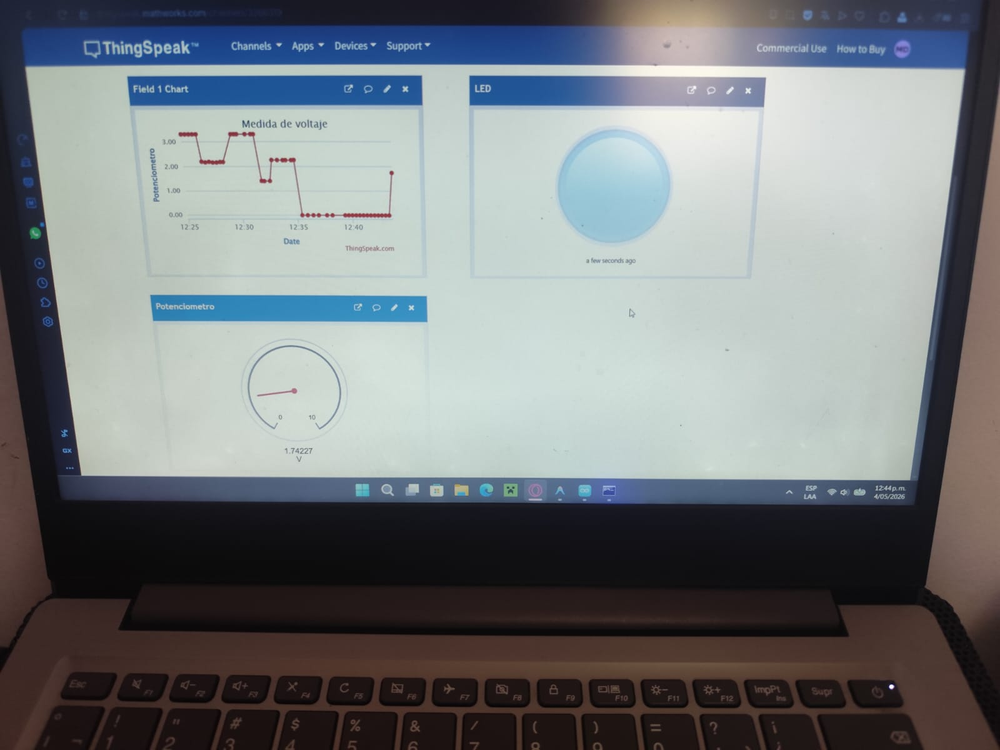
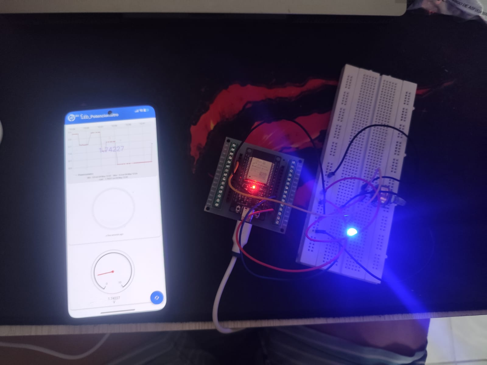
IX. Videos de Funcionamiento
X. Proceso de Creación
- Punto de partida: Se reutilizó el circuito analógico/digital del potenciómetro y LED de los proyectos anteriores.
- Creación del canal ThingSpeak: Se configuró una cuenta gratuita en MathWorks y se generó un canal con dos campos (voltaje y estado del LED), obteniendo el Channel ID y la Write API Key asociados.
- Instalación de la librería: Se instaló "ThingSpeak" de MathWorks desde el Library Manager del IDE de Arduino.
- Programación del firmware: Código estructurado para conectar al router local, muestrear el potenciómetro, invertir el estado del LED y empaquetar los datos para envío en la nube usando
setField(). - Configuración de widgets en la Nube: En el dashboard de ThingSpeak se agregaron tres widgets para los observadores humanos: gráfica de histórico, gauge analógico (0-3.3V), y lámpara indicadora para el LED.
XI. Diferencias con Proyectos Anteriores
| Característica | Base | Bluetooth | WiFi Local | ThingSpeak |
|---|---|---|---|---|
| Lectura ADC | Sí | Sí | Sí | Sí |
| Control del LED | PWM | PWM | On/Off web | Auto-toggle (cada 20s) |
| Comunicación | USB | BT SPP | WiFi HTTP local | WiFi + nube HTTP |
| Interfaz | Monitor serial | App BT | Página web local | Dashboard en nube |
| Alcance | Local | 10m (P2P) | LAN (Red local) | Global (Internet) |
| Historial | No | No | No | Sí (Base de datos remota) |
XII. Conclusiones
- El proyecto demuestra cómo integrar el ESP32 con la plataforma IoT ThingSpeak para enviar datos a la nube y visualizarlos remotamente desde cualquier dispositivo con acceso a Internet.
- La librería oficial de ThingSpeak simplifica enormemente la comunicación con la API REST, reduciendo el código de red a pocas líneas (
begin,setField,writeFields). - El uso del patrón no bloqueante con
millis()mantiene el procesador disponible entre envíos, a diferencia dedelay()que detiene toda ejecución. - Los widgets de ThingSpeak proporcionan una visualización profesional sin necesidad de desarrollar una interfaz web propia ni gestionar servidores (Backend) o bases de datos.
- El almacenamiento persistente en la nube permite revisar el historial de datos incluso después de apagar el ESP32, resolviendo una de las mayores limitaciones de los proyectos anteriores.
- El acceso simultáneo desde el navegador web y la aplicación móvil confirma la naturaleza verdaderamente distribuida del sistema IoT.
XIII. Ecuaciones
| Ecuación | Descripción | Referencia |
|---|---|---|
| $V_{\text{cursor}}=(N_{ADC}/4095)\times 3.3$ | Conversión ADC a voltaje | Ir a sección |
| $\Delta V = 3.3/4095 \approx 0.806\text{mV}$ | Resolución por paso del ADC | Ir a sección |
Temperatura sin Termómetro (DHT22)
I. Introducción
Este documento describe de manera detallada el proyecto "Temperatura sin Termómetro", un sistema embebido que permite medir la temperatura y la humedad ambiental sin necesidad de un termómetro convencional de mercurio o alcohol, utilizando un sensor digital DHT22 (AM2302) conectado al microcontrolador ESP32. Los resultados son procesados y mostrados digitalmente en una pantalla OLED de 0.96 pulgadas mediante el protocolo I2C y también a través del Monitor Serial.
Este proyecto introduce conceptos fundamentales de comunicación I2C, lectura de sensores digitales de un solo hilo (1-Wire propietario), manejo de pantallas gráficas monocromáticas y procesamiento de magnitudes ambientales.
II. Objetivo del Proyecto
Implementar un sistema de monitoreo ambiental utilizando el microcontrolador ESP32 que mida temperatura y humedad con un sensor DHT22 y las presente en una pantalla OLED, demostrando el uso de:
- Lectura de sensores digitales mediante protocolo propietario de un hilo (DHT22).
- Comunicación I2C para el control de una pantalla OLED SSD1306.
- Uso de librerías externas de hardware (
Adafruit_GFX,Adafruit_SSD1306,DHT). - Manejo de errores en la lectura de sensores (verificación
isnan()). - Salida dual de datos: Monitor Serial y pantalla OLED gráfica.
III. Materiales Necesarios
| Aspecto | Cant. | Componente | Especificación |
|---|---|---|---|
| 1 | ESP32 Dev Module | Microcontrolador dual-core con Wi-Fi/Bluetooth | |
| 1 | Sensor DHT22 (AM2302) | Rango: -40 a 80 °C, precisión $\pm 0.5$ °C. Humedad: 0-100% HR $\pm 2$% | |
| 1 | Pantalla OLED 0.96" | Controlador SSD1306, 128x64 px, interfaz I2C | |
| 1 | Protoboard | Placa de pruebas de 830 puntos | |
| Varios | Cables jumper | Macho-macho para conexiones | |
| 1 | Cable USB | Para programación y alimentación |
IV. Esquema de Conexión
El sensor DHT22 se conecta mediante un bus digital al pin GPIO4. La pantalla OLED de 0.96 pulgadas con controlador SSD1306 utiliza el protocolo I2C para la comunicación, requiriendo únicamente dos líneas de datos (SDA y SCL) además de la alimentación. Sus pines son: GND, VDD (3.3V), SCK (reloj I2C en GPIO22) y SDA (datos I2C en GPIO21).
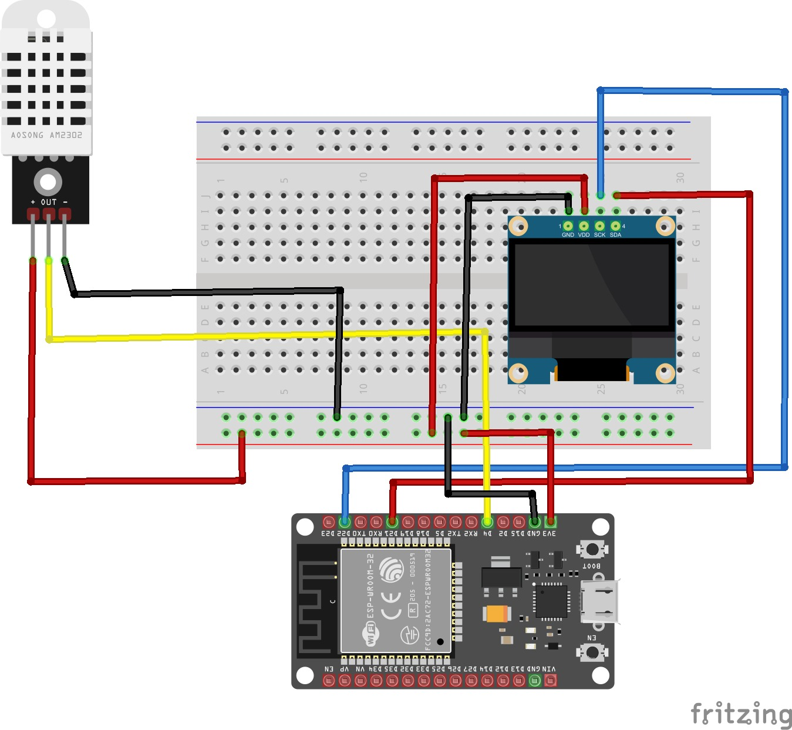
Diagrama de Conexiones
| Componente | Pin | ESP32 GPIO |
|---|---|---|
| DHT22 | OUT (Datos) | GPIO4 |
| DHT22 | VCC (+) | 3.3V |
| DHT22 | GND (-) | GND |
| OLED SSD1306 | SDA | GPIO21 |
| OLED SSD1306 | SCK (SCL) | GPIO22 |
| OLED SSD1306 | VDD | 3.3V |
| OLED SSD1306 | GND | GND |
V. Código Fuente
📄 Mostrar código fuente completo (Arduino)
#include <Wire.h>
#include <Adafruit_GFX.h>
#include <Adafruit_SSD1306.h>
#include <DHT.h>
// Configuración de la OLED
#define SCREEN_WIDTH 128
#define SCREEN_HEIGHT 64
#define OLED_RESET -1
Adafruit_SSD1306 display(SCREEN_WIDTH, SCREEN_HEIGHT, &Wire, OLED_RESET);
// Configuración del DHT
#define DHTPIN 4 // Pin D4 del ESP32 = GPIO 4
#define DHTTYPE DHT22
DHT dht(DHTPIN, DHTTYPE);
void setup() {
Serial.begin(115200);
Wire.begin(21, 22); // SDA=21, SCL=22
// Inicia pantalla OLED (dirección I2C: 0x3C o 0x7A)
if (!display.begin(SSD1306_SWITCHCAPVCC, 0x7A)) {
Serial.println("No se encontró la pantalla OLED");
while (true);
}
dht.begin();
// Pantalla de inicio
display.clearDisplay();
display.setTextColor(SSD1306_WHITE);
display.setTextSize(1);
display.setCursor(0, 0);
display.println("ESP32 + DHT + OLED");
display.println("Iniciando...");
display.display();
delay(2000);
}
void loop() {
delay(2000); // Tiempo de muestreo del DHT22
float humedad = dht.readHumidity();
float temperatura = dht.readTemperature();
if (isnan(humedad) || isnan(temperatura)) {
Serial.println("Error al leer el sensor DHT");
display.clearDisplay();
display.setCursor(0, 0);
display.println("Error sensor DHT");
display.display();
return;
}
Serial.print("Temperatura: "); Serial.print(temperatura); Serial.println(" C");
Serial.print("Humedad: "); Serial.print(humedad); Serial.println(" %");
display.clearDisplay();
display.setTextSize(1);
display.setCursor(0, 0);
display.println("Lectura ambiental");
display.setTextSize(2);
display.setCursor(0, 20);
display.print(temperatura, 1); display.println(" C");
display.setCursor(0, 45);
display.print(humedad, 1); display.println(" %");
display.display();
}Análisis del Código
- Librerías de Adafruit:
Adafruit_GFX.hproporciona las primitivas de dibujo (texto, formas) yAdafruit_SSD1306.hes el driver I2C de la pantalla OLED. Ambas usanWire.hpara gestionar los pines SDA/SCL. - Inicialización I2C:
display.begin(SSD1306_SWITCHCAPVCC, 0x7A)establece la conexión I2C con la OLED (la dirección hexadecimal depende del fabricante, en este caso 0x7A). - Función
isnan(): Es vital comprobar la integridad de las lecturas analógicas-digitales (Not-A-Number) en caso de que un cable se desconecte o el sensor falle. - Doble Buffer Gráfico: La librería Adafruit no dibuja de inmediato. Requiere modificar todo en memoria RAM primero (
setCursor,print) y luego enviar el frame I2C de golpe condisplay.display().
VI. Principio de Funcionamiento
Comunicación con el Sensor DHT22 (1-Wire)
El DHT22 utiliza un protocolo propietario de un solo hilo (single-wire) para transmitir datos. El ESP32 envía una señal de inicio (pulso bajo de 1ms). El sensor responde transmitiendo 40 bits serialmente: 16 bits de humedad, 16 bits de temperatura y 8 bits de checksum. El código de la librería de Adafruit decodifica los anchos de pulso en microsegundos y valida el checksum.
Comunicación I2C con la Pantalla OLED
El protocolo I2C (Inter-Integrated Circuit) utiliza dos líneas compartidas. El ESP32 actúa como maestro y la pantalla OLED como esclavo. Los comandos y datos de los 128x64 píxeles se envían mediante tramas I2C que incluyen condición de inicio, dirección del esclavo (0x7A), control y datos.
Conversión Interna Termistor (NTC)
El sensor DHT22 contiene internamente un termistor NTC (Negative Temperature Coefficient) y un sensor capacitivo de humedad. El termistor varía su resistencia no linealmente de acuerdo a la temperatura, regido por la Ecuación de Steinhart-Hart. El circuito interno de fábrica realiza la linealización y la digitalización entregando directamente los grados Celsius.
VII. Fotografías del Montaje
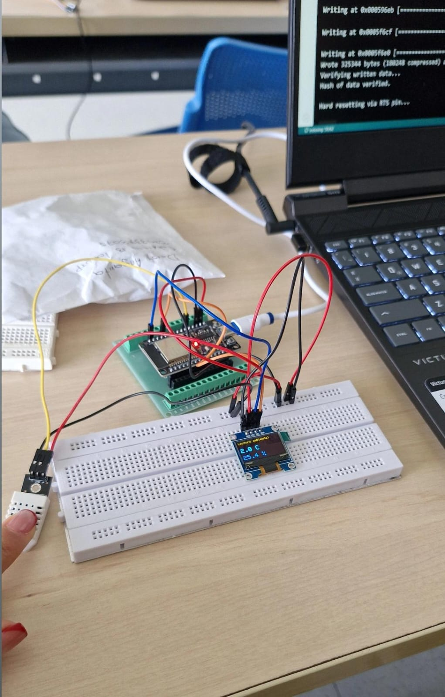
VIII. Simulación
IX. Proceso de Creación
- Diseño de Arquitectura de Comunicación: Se planificó un esquema centralizado donde el ESP32 recolecta mediante 1-Wire y reporta mediante UART (USB) y I2C simultáneamente.
- Instalación del Ecosistema Adafruit: Instalación de librerías para gráficos rasterizados y parsing digital del DHT desde el Library Manager del IDE de Arduino.
- Manejo de Tiempos del DHT22: La hoja de datos del DHT22 exige 2 segundos mínimos entre muestras consecutivas; por eso el bloque
loop()integra undelay(2000)para evitar sobresaturación del IC interno. - Diseño de Interfaz OLED: Se distribuyó el frame de 128x64 px en 3 filas lógicas. Texto pequeño (size 1) para el encabezado y texto mediano/grande (size 2) para magnitudes, asegurando legibilidad a distancia.
X. Conclusiones
- El proyecto demuestra cómo obtener mediciones ambientales precisas utilizando componentes electrónicos digitales de bajo costo, sin requerir lectura de termistores manuales con ADC y calibración.
- El sensor DHT22 proporciona lecturas pre-calibradas muy confiables ($\pm 0.5$ °C), con una complejidad de lectura encapsulada impecablemente por la librería de software.
- La pantalla OLED SSD1306 permite una visualización autónoma de los datos, eliminando la dependencia del Monitor Serial del computador una vez cargado el firmware (el sistema se vuelve portable).
- El bus de comunicación I2C simplifica el diseño de hardware al requerir solo dos líneas de datos (SDA, SCL) para controlar un panel de 8192 píxeles, dejando más pines disponibles para sensores.
- El robusto manejo de excepciones mediante comprobación de
NaNgarantiza que el sistema no presente falsos positivos si el sensor sufre una falla de conectividad o daño.
XI. Ecuaciones
| Ecuación | Descripción | Referencia |
|---|---|---|
| $R(T) = R_0 \cdot e^{\beta\left(\frac{1}{T} - \frac{1}{T_0}\right)}$ | Ecuación de Steinhart-Hart NTC | Ir a sección |
| $T=T_{raw}/10$ , $RH=H_{raw}/10$ | Conversión interna DHT22 a decimales | Ir a sección |
Temperatura con Termómetro (OLED)
I. Introducción
Este documento describe de manera detallada el proyecto "Temperatura con Termómetro", una evolución del proyecto básico de lectura de temperatura que incorpora un termómetro gráfico animado en la pantalla OLED. El sistema utiliza un sensor digital DHT22 (AM2302) conectado a un microcontrolador ESP32, con los resultados mostrados en una pantalla OLED de 0.96 pulgadas mediante una representación visual que incluye un termómetro clásico con nivel de "mercurio" proporcional a la temperatura medida.
La diferencia fundamental con respecto al proyecto "Temperatura sin Termómetro" es la adición de gráficos vectoriales programáticos en la pantalla OLED: un tubo rectangular con bulbo circular cuyo relleno varía dinámicamente, marcas de escala laterales, y un layout mejorado que combina la representación gráfica a la izquierda con los valores numéricos a la derecha.
Este proyecto introduce conceptos avanzados de programación gráfica en pantallas OLED, geometría computacional para interfaces embebidas, mapeo de valores físicos a representaciones visuales y diseño de interfaces de usuario en sistemas con recursos limitados.
II. Objetivo del Proyecto
Implementar un sistema de monitoreo ambiental con representación gráfica utilizando el microcontrolador ESP32 que mida temperatura y humedad con un sensor DHT22 y las presente en una pantalla OLED con un termómetro visual animado, demostrando el uso de:
- Lectura de sensores digitales mediante protocolo propietario de un hilo (DHT22).
- Comunicación I2C para el control de una pantalla OLED SSD1306.
- Librerías gráficas de Adafruit (
Adafruit_GFX,Adafruit_SSD1306). - Primitivas de dibujo: rectángulos, círculos, líneas horizontales y rellenos.
- Mapeo lineal de magnitudes físicas a coordenadas de píxeles.
- Manejo de errores con memoria del último valor válido.
- Diseño de layout para pantallas de resolución limitada (128x64 px).
III. Materiales Necesarios
| Aspecto | Cant. | Componente | Especificación |
|---|---|---|---|
| 1 | ESP32 Dev Module | Microcontrolador con Wi-Fi/Bluetooth | |
| 1 | Sensor DHT22 (AM2302) | Rango: -40 a 80 °C, precisión $\pm 0.5$ °C | |
| 1 | Pantalla OLED 0.96" | SSD1306, 128x64 px, interfaz I2C | |
| 1 | Protoboard | Placa de pruebas de 830 puntos | |
| Varios | Cables jumper | Macho-macho para conexiones | |
| 1 | Cable USB Micro-B | Para programación y alimentación |
IV. Esquema de Conexión
El sensor DHT22 se conecta al pin GPIO4, y la pantalla OLED se comunica mediante el bus I2C (SDA en GPIO21 y SCL en GPIO22).
Diagrama de Conexiones
| Componente | Pin | ESP32 GPIO |
|---|---|---|
| DHT22 | + (VCC) | 3.3V |
| DHT22 | OUT (datos) | GPIO4 |
| DHT22 | - (GND) | GND |
| OLED SSD1306 | GND | GND |
| OLED SSD1306 | VDD | 3.3V |
| OLED SSD1306 | SCK (SCL) | GPIO22 |
| OLED SSD1306 | SDA | GPIO21 |
V. Código Fuente
📄 Mostrar código fuente completo (Arduino)
#include <Wire.h>
#include <Adafruit_GFX.h>
#include <Adafruit_SSD1306.h>
#include <DHT.h>
#define ANCHO 128
#define ALTO 64
#define DIR_OLED 0x3C
#define PIN_DHT 4
#define T_MIN 0.0
#define T_MAX 40.0
#define INTERVALO_MS 2000
Adafruit_SSD1306 display(ANCHO, ALTO, &Wire, -1);
DHT dht(PIN_DHT, DHT22);
float ultimaT = NAN;
float ultimaH = NAN;
void dibujarTermometro(float tempC) {
// Recorte de rango
if (tempC < T_MIN) tempC = T_MIN;
if (tempC > T_MAX) tempC = T_MAX;
// Dimensiones y posiciones
int x_tubo = 4;
int y_tubo = 4;
int ancho = 10;
int alto_tubo = 42;
int r_bulbo = 7;
int cx = x_tubo + ancho/2;
int cy = y_tubo + alto_tubo + r_bulbo - 1;
// Dibuja el contorno exterior
display.drawRect(x_tubo, y_tubo, ancho, alto_tubo, SSD1306_WHITE);
display.drawCircle(cx, cy, r_bulbo, SSD1306_WHITE);
// Dibuja marcas de escala laterales
display.drawFastHLine(x_tubo + ancho, y_tubo, 4, SSD1306_WHITE); // Máximo
display.drawFastHLine(x_tubo + ancho, y_tubo + alto_tubo/2, 3, SSD1306_WHITE); // Medio
display.drawFastHLine(x_tubo + ancho, y_tubo + alto_tubo, 4, SSD1306_WHITE); // Mínimo
// Dibuja el bulbo siempre lleno
display.fillCircle(cx, cy, r_bulbo - 1, SSD1306_WHITE);
// Cálculo del nivel proporcional
float prop = (tempC - T_MIN) / (T_MAX - T_MIN);
int nivel = prop * alto_tubo;
int y_nivel = y_tubo + alto_tubo - nivel;
// Dibuja la columna central ("mercurio")
display.fillRect(x_tubo + 2, y_nivel, ancho - 4, nivel, SSD1306_WHITE);
}
void mostrarDatos(float t, float h) {
display.clearDisplay();
dibujarTermometro(t);
// Textos a la derecha del termómetro
display.setTextSize(1);
display.setTextColor(SSD1306_WHITE);
display.setCursor(30, 4);
display.print("Temperatura:");
display.setTextSize(2);
display.setCursor(30, 16);
display.print(t, 1);
display.print((char)248); // Símbolo de grados en CP437
display.print("C");
display.setTextSize(1);
display.setCursor(30, 38);
display.print("Humedad:");
display.setTextSize(2);
display.setCursor(30, 50);
display.print(h, 1);
display.print(" %");
display.display();
}
void setup() {
Serial.begin(115200);
Wire.begin(21, 22);
if (!display.begin(SSD1306_SWITCHCAPVCC, DIR_OLED)) {
Serial.println("Fallo OLED");
while (true);
}
dht.begin();
display.clearDisplay();
display.setTextSize(1);
display.setTextColor(SSD1306_WHITE);
display.setCursor(10, 20);
display.print("Termo-Higrometro");
display.setCursor(30, 40);
display.print("Iniciando...");
display.display();
delay(2000);
}
void loop() {
delay(INTERVALO_MS);
float h = dht.readHumidity();
float t = dht.readTemperature();
if (isnan(h) || isnan(t)) {
Serial.println("Error lectura DHT22");
// No borra la pantalla, usa el último valor válido si lo hay
} else {
ultimaT = t;
ultimaH = h;
Serial.print("T:"); Serial.print(t); Serial.print("C H:"); Serial.println(h);
}
if (!isnan(ultimaT) && !isnan(ultimaH)) {
mostrarDatos(ultimaT, ultimaH);
}
}Análisis del Código
- Librerías Incluidas: Utiliza
Wire.hpara I2C,Adafruit_GFX.hpara las primitivas (rectángulos, círculos, relleno) yAdafruit_SSD1306.hcomo driver gráfico. El DHT22 usaDHT.h. - Constantes de Configuración: OLED de 128x64px en la dirección 0x3C, el rango de la temperatura visual (
T_MIN = 0.0yT_MAX = 40.0) y el pin de datos GPIO4. - Función
dibujarTermometro(): Crea la visualización dinámica recortando el rango, estructurando el tubo mediante rectángulos, y calculando la altura del relleno "mercurio" por interpolación en base al valor mapeado. - Función
mostrarDatos(): Combina el gráfico con textos y el carácter 248 (°) según el set de caracteres CP437, formateando a tamaño de fuente 1 y 2. - Último Valor Válido: Guarda las lecturas en
ultimaTyultimaH. Si falla un ciclo (NaN), ignora el error temporal manteniendo la lectura visual intacta, proporcionando mayor robustez.
VI. Principio de Funcionamiento
Comunicación con el Sensor DHT22 (1-Wire)
El DHT22 utiliza un protocolo propietario de un solo hilo (single-wire). El ESP32 envía una señal de inicio (pulso bajo de 1ms). El DHT22 responde transmitiendo 40 bits serialmente donde la duración del pulso alto diferencia los "0" y los "1".
Comunicación I2C con la Pantalla OLED
El protocolo I2C utiliza las líneas compartidas SDA (GPIO21) y SCL (GPIO22) operando con la pantalla en la dirección maestra 0x3C. La gráfica es construida sobre la RAM local para luego actualizar el hardware completo al llamar a display.display().
Renderizado Gráfico del Termómetro
El termómetro se renderiza utilizando primitivas gráficas por interpolación lineal. La matemática detalla cómo se simula visualmente la escala ascendente de temperatura invertida respecto a los ejes de la OLED, creando el "mercurio":
Esto significa que a mayor temperatura, el nivel $y_{\text{nivel}}$ es menor (sube en la pantalla).
VII. Fotografías del Montaje
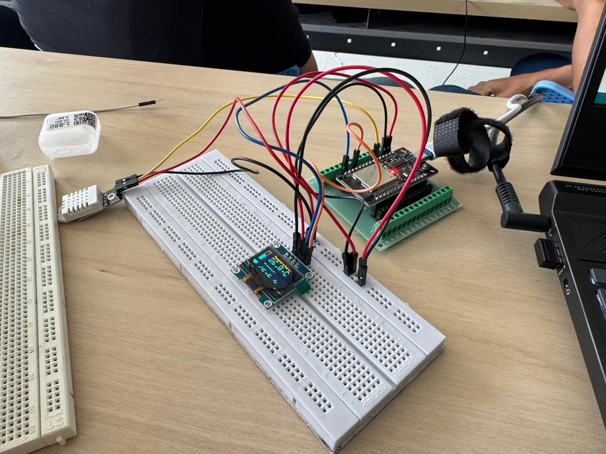
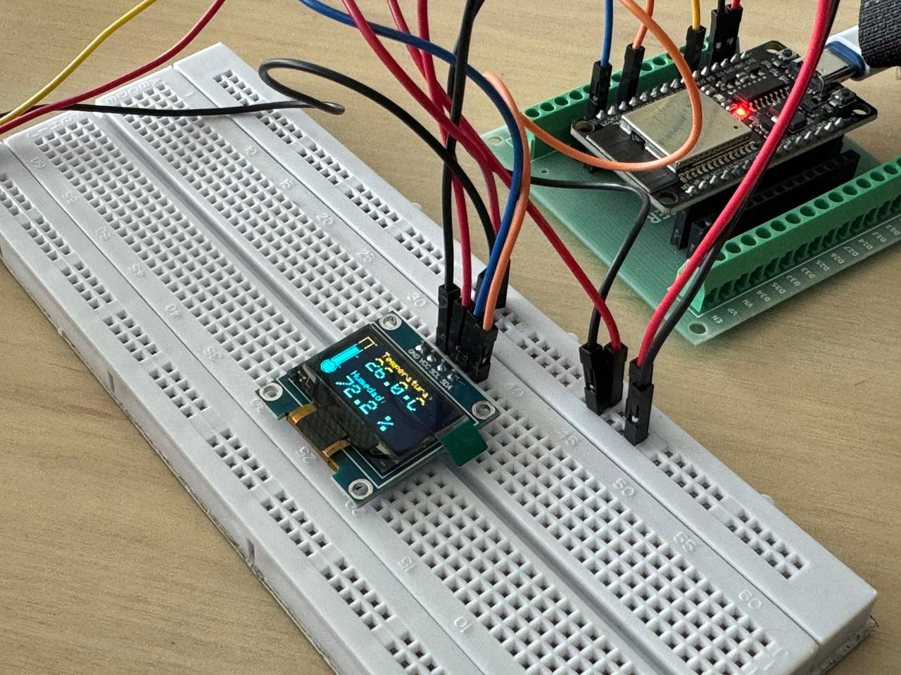
VIII. Proceso de Creación
- Selección de componentes: Se reutilizó el hardware del proyecto base demostrando que las mejoras son netamente a nivel de software.
- Diseño del layout gráfico: Se distribuyó horizontalmente: los primeros 22 píxeles para el termómetro gráfico y el resto para el bloque de valores numéricos grandes.
- Implementación Vectorial: Se utilizaron las primitivas geométricas (
drawRect(),drawCircle(),fillCircle(),fillRect()) mapeando la temperatura en pixeles en base a límites predefinidos (0-40 °C). - Mejora del manejo de errores: Se modificó el código base introduciendo el caché en memoria para ignorar lecturas basura (NaN) impidiendo pantallas vacías momentáneas.
IX. Diferencias con el Proyecto Base
| Característica | Sin Termómetro | Con Termómetro |
|---|---|---|
| Representación visual | Solo texto | Termómetro gráfico + texto |
| Dirección I2C | 0x7A | 0x3C |
| Manejo de errores | Muestra error visual | Patrón "Último valor válido" |
| Layout pantalla | Texto centrado | Gráfico izq. + texto der. |
| Funciones gráficas | Ninguna | drawRect, fillCircle, etc. |
| Rango de escala | No aplica | 0--40 °C configurable |
X. Conclusiones
- El proyecto demuestra cómo crear interfaces gráficas informativas en pantallas OLED limitadas combinando íconos escalables geométricos y grandes bloques numéricos.
- La función
dibujarTermometro()ilustra un buen ejemplo de mapeo lineal de magnitudes físicas a coordenadas de píxeles, un pilar esencial en telemetría de sistemas embebidos. - El patrón de "último valor válido" en conjunto con la comprobación
NaNrobustecen inmensamente el sistema al descartar lecturas ruidosas originadas por latencias del pin digital 1-Wire. - Se evidencia que una mejora visual gigantesca de UI (User Interface) puede obtenerse exclusivamente con algoritmos de software eficientes, usando la librería estandarizada GFX y conservando exactamente los mismos componentes de hardware.
XI. Ecuaciones
| Ecuación | Descripción | Referencia |
|---|---|---|
| $y_{\text{nivel}} = y_{\text{tubo}} + \text{alto\_tubo} - \left\lfloor \frac{T - T_{\min}}{T_{\max} - T_{\min}} \times \text{alto\_tubo} \right\rfloor$ | Interpolación a Píxeles | Ir a sección |
Movimiento Armónico Simple
I. Introducción
Este documento describe el proyecto "Movimiento Armónico Simple con Pantalla OLED", una aplicación educativa que combina física y electrónica digital con el microcontrolador ESP32. El sistema simula y visualiza en tiempo real el Movimiento Armónico Simple (MHS) — con opción de amortiguamiento — sobre una pantalla OLED SSD1306 de 128x64 píxeles conectada por I2C.
El usuario puede modificar interactivamente los parámetros de la onda (amplitud, frecuencia, fase y coeficiente de amortiguamiento) a través del Monitor Serial, observando instantáneamente el efecto sobre la gráfica dibujada en la pantalla OLED.
II. Objetivo del Proyecto
Implementar un simulador visual e interactivo de Movimiento Armónico Simple utilizando el microcontrolador ESP32 y una pantalla OLED SSD1306, demostrando:
- La representación gráfica en tiempo real de funciones sinusoidales sobre un display OLED de 128x64 píxeles.
- El control interactivo de los cuatro parámetros fundamentales del MHS: amplitud ($A$), frecuencia ($f$), fase ($\varphi$) y amortiguamiento ($\beta$).
- La comunicación I2C entre el ESP32 y periféricos mediante la librería Wire.
- El procesamiento de comandos textuales a través del puerto serial.
III. Materiales Necesarios
| Aspecto | Cant. | Componente | Especificación |
|---|---|---|---|
| 1 | ESP32 Dev Module | Microcontrolador dual-core con Wi-Fi/Bluetooth | |
| 1 | Pantalla OLED SSD1306 | 128x64 px, interfaz I2C, 0.96" | |
| 1 | Protoboard | Placa de pruebas de 830 puntos | |
| 4 | Cables jumper | Hembra-hembra para conexión I2C | |
| 1 | Cable USB | Para programación y alimentación |
IV. Esquema de Conexión
El circuito es minimalista: únicamente se conecta la pantalla OLED SSD1306 al ESP32 mediante el bus I2C (4 cables). No se requieren componentes adicionales como resistencias ni sensores.
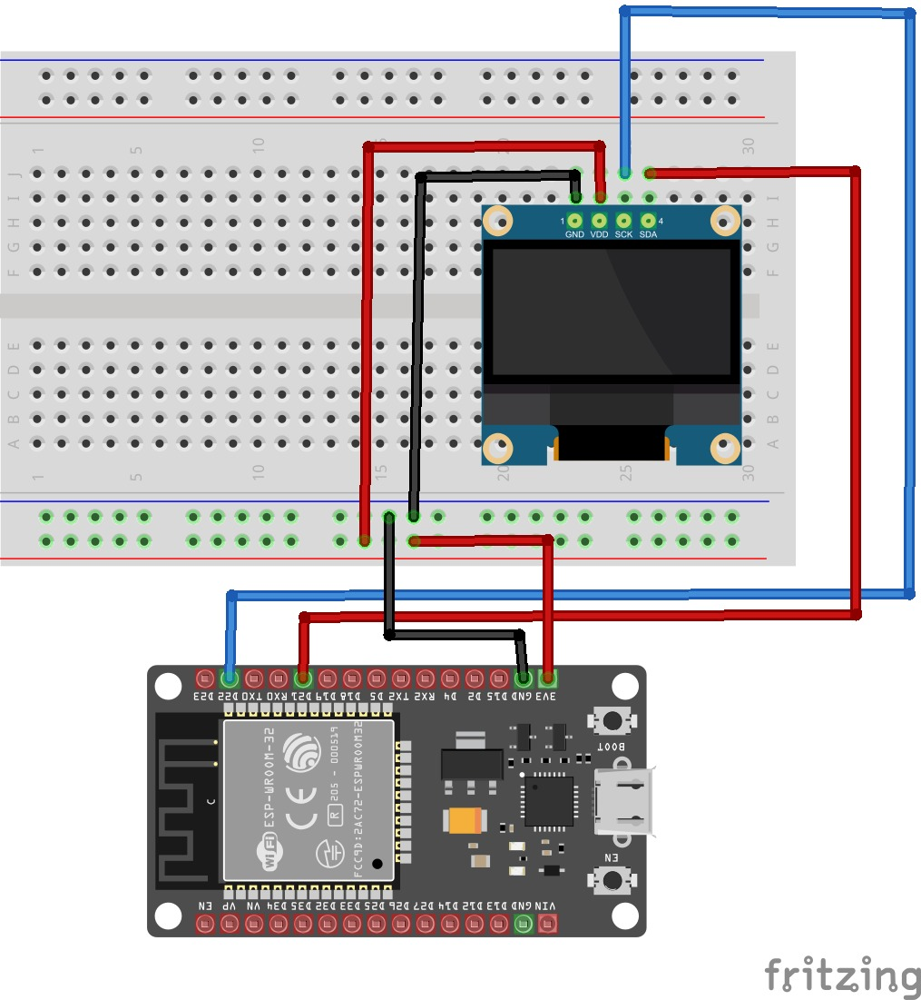
Diagrama de Conexiones
| OLED SSD1306 | Función | ESP32 GPIO |
|---|---|---|
| GND | Tierra | GND |
| VDD (VCC) | Alimentación | 3.3V |
| SCK (SCL) | Reloj I2C | GPIO22 |
| SDA | Datos I2C | GPIO21 |
V. Código Fuente
📄 Mostrar código fuente completo (Arduino)
#include <Wire.h>
#include <Adafruit_GFX.h>
#include <Adafruit_SSD1306.h>
#include <math.h>
#define SCREEN_WIDTH 128
#define SCREEN_HEIGHT 64
#define OLED_RESET -1
#define OLED_ADDR 0x3C
#define PIN_SDA 21
#define PIN_SCL 22
Adafruit_SSD1306 display(SCREEN_WIDTH, SCREEN_HEIGHT, &Wire, OLED_RESET);
float amplitud = 25.0; // píxeles
float frecuencia = 1.0; // Hz
float fase = 0.0; // radianes
float amort = 0.0; // coeficiente de amortiguamiento
float tiempoOffset = 0.0;
unsigned long tAnterior = 0;
String inputBuffer = "";
void setup() {
Serial.begin(115200);
Wire.begin(PIN_SDA, PIN_SCL);
if (!display.begin(SSD1306_SWITCHCAPVCC, OLED_ADDR)) {
Serial.println("ERROR OLED");
while (true);
}
display.clearDisplay();
display.setTextSize(1);
display.setTextColor(SSD1306_WHITE);
display.setCursor(10, 20);
display.println(" MHS ESP32");
display.display();
delay(1500);
tAnterior = millis();
}
void loop() {
procesarSerial();
unsigned long ahora = millis();
float dt = (ahora - tAnterior) / 1000.0;
tAnterior = ahora;
tiempoOffset += dt;
static unsigned long ultimoDibujo = 0;
if (ahora - ultimoDibujo >= 33) {
ultimoDibujo = ahora;
dibujarGrafica();
}
}
void procesarSerial() {
while (Serial.available()) {
char c = Serial.read();
if (c == '\n' || c == '\r') {
if (inputBuffer.length() > 0) {
inputBuffer.trim();
inputBuffer.toUpperCase();
if (inputBuffer == "R") {
amplitud = 25.0; frecuencia = 1.0; fase = 0.0; amort = 0.0; tiempoOffset = 0.0;
} else if (inputBuffer.startsWith("A:")) {
amplitud = inputBuffer.substring(2).toFloat();
} else if (inputBuffer.startsWith("F:")) {
frecuencia = inputBuffer.substring(2).toFloat(); tiempoOffset = 0.0;
} else if (inputBuffer.startsWith("P:")) {
fase = inputBuffer.substring(2).toFloat();
} else if (inputBuffer.startsWith("B:")) {
amort = inputBuffer.substring(2).toFloat(); tiempoOffset = 0.0;
}
inputBuffer = "";
}
} else {
inputBuffer += c;
}
}
}
float calcY(float t) {
float omega = 2.0 * PI * frecuencia;
float decay = exp(-amort * t);
return amplitud * decay * sin(omega * t + fase);
}
void dibujarGrafica() {
display.clearDisplay();
int cx = SCREEN_HEIGHT / 2;
display.drawFastHLine(0, cx, SCREEN_WIDTH, SSD1306_WHITE);
display.drawFastVLine(4, 0, SCREEN_HEIGHT, SSD1306_WHITE);
display.setTextSize(1);
display.setCursor(30, 1);
display.print("A:"); display.print((int)amplitud);
display.print(" f:"); display.print(frecuencia, 1);
float periodo = 1.0 / frecuencia;
float ventana = 2.0 * periodo;
int pixStart = 6;
int pixEnd = SCREEN_WIDTH - 2;
int numPix = pixEnd - pixStart;
int yPrev = 0;
for (int px = 0; px < numPix; px++) {
float tPlot = tiempoOffset + (float)px / numPix * ventana;
float yVal = calcY(tPlot);
int yScreen = cx - (int)yVal;
yScreen = constrain(yScreen, 1, SCREEN_HEIGHT - 1);
int xScreen = pixStart + px;
if (px == 0) {
display.drawPixel(xScreen, yScreen, SSD1306_WHITE);
} else {
int y1 = yPrev, y2 = yScreen;
if (y1 > y2) { int tmp = y1; y1 = y2; y2 = tmp; }
for (int yy = y1; yy <= y2; yy++) display.drawPixel(xScreen, yy, SSD1306_WHITE);
}
yPrev = yScreen;
}
float yActual = calcY(tiempoOffset);
int yDot = cx - (int)yActual;
yDot = constrain(yDot, 2, SCREEN_HEIGHT - 2);
display.fillCircle(pixStart, yDot, 2, SSD1306_WHITE);
display.setCursor(90, SCREEN_HEIGHT - 9);
display.print("y="); display.print(yActual, 1);
if (amort > 0.01) {
display.setCursor(7, SCREEN_HEIGHT - 9);
display.print("b:"); display.print(amort, 2);
}
display.display();
}Análisis del Código
- Librerías y Hardware: Utiliza
Wire.hpara I2C,Adafruit_GFX.hpara el dibujado, yAdafruit_SSD1306.h. La OLED se controla condisplay.begin(SSD1306_SWITCHCAPVCC, 0x3C). - Renderizado a 30 FPS: El bucle principal lee un offset de tiempo global y la pantalla se refresca cada $\sim$33ms, calculando siempre un tramo temporal (ventana) para simular el desplazamiento visual fluido.
- Conexión de Puntos: Para que la curva no se vea fragmentada, entre un punto (X1, Y1) y (X2, Y2) se dibuja una línea vertical interpolada en vez de un solo píxel suelto.
- Parser de Comandos:
procesarSerial()lee constantemente y busca patrones comoA:oF:, utilizandoinputBuffer.substring(2).toFloat()para alterar las variables del MHS en vivo.
VI. Principio de Funcionamiento
Movimiento Armónico Simple (MHS)
El MHS es un movimiento periódico en el que la posición de una partícula varía sinusoidalmente con el tiempo. La ecuación general es:
Donde $A$ es la amplitud, $f$ es la frecuencia en Hz, y $\varphi$ es la fase inicial en radianes.
Oscilación Amortiguada
En sistemas reales, la energía se disipa por fricción. La ecuación del MHS amortiguado introduce un factor de decaimiento exponencial:
Donde $\beta \geq 0$ es el coeficiente de amortiguamiento. Si $\beta = 0$, la oscilación es perpetua. Si $\beta > 0$, la onda decae gradualmente.
VII. Fotografías del Montaje
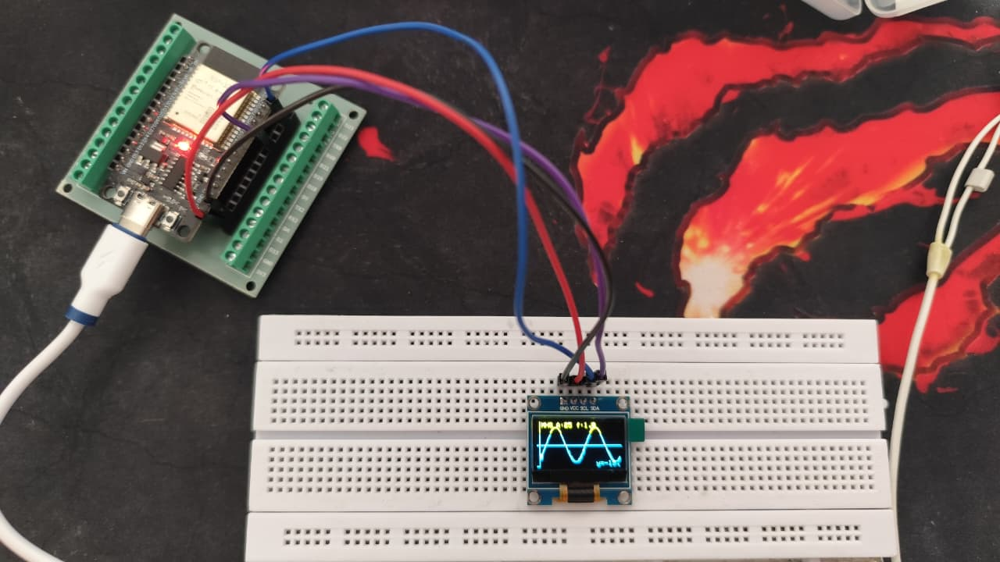
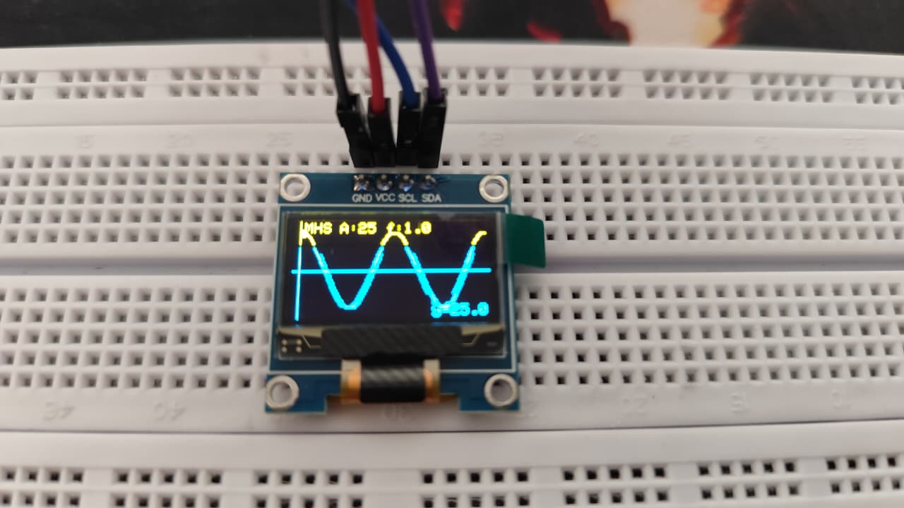
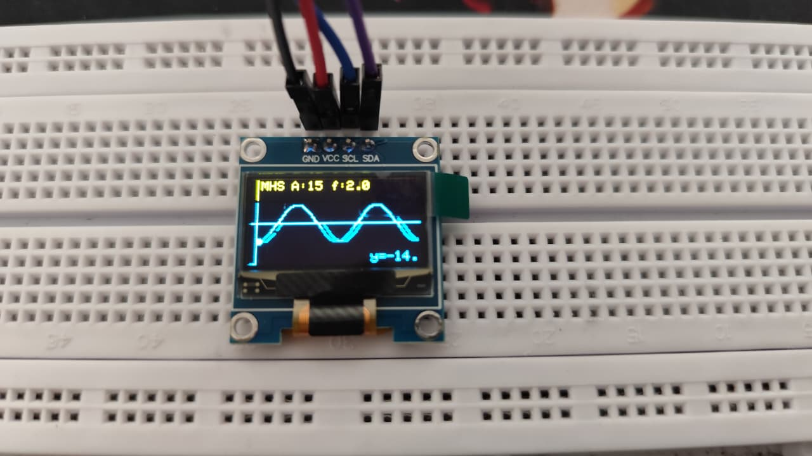
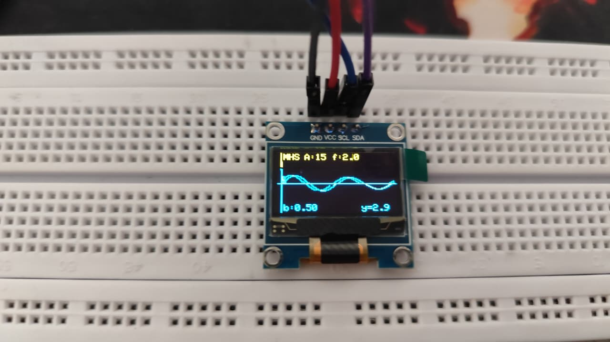
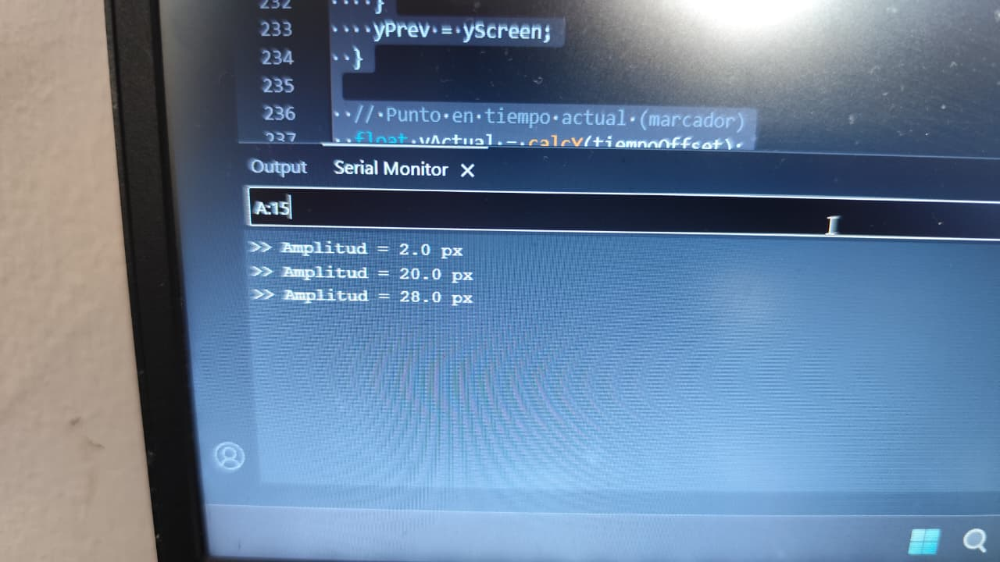
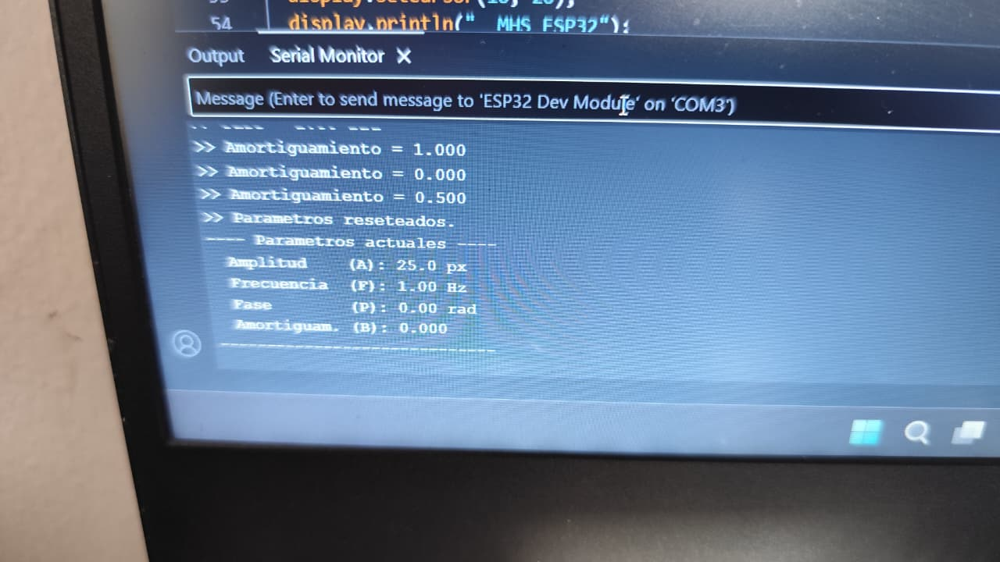
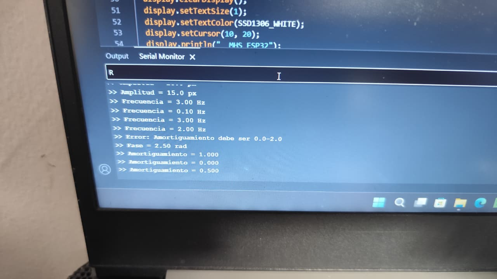
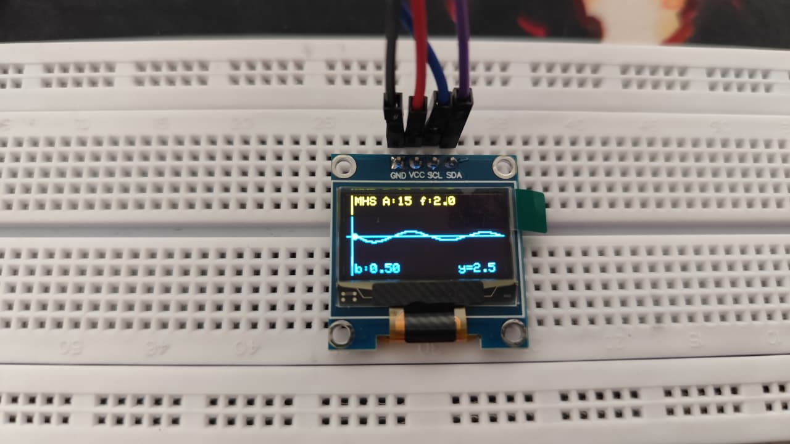
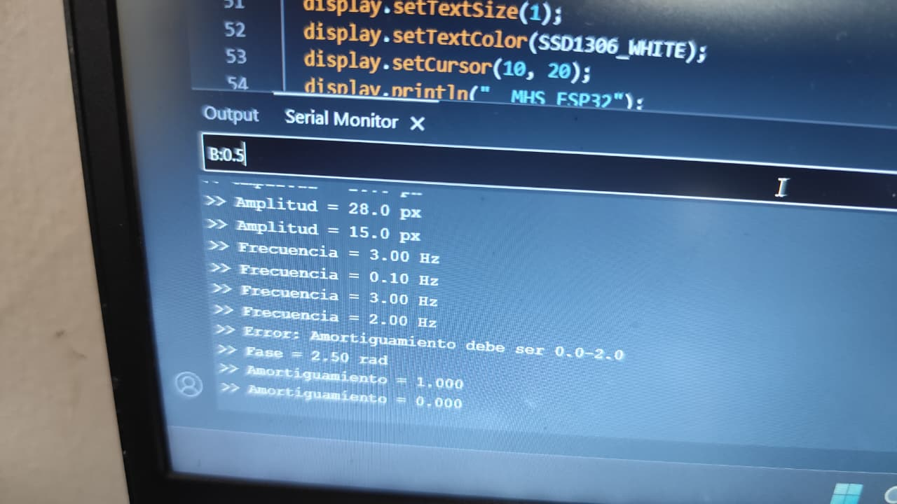
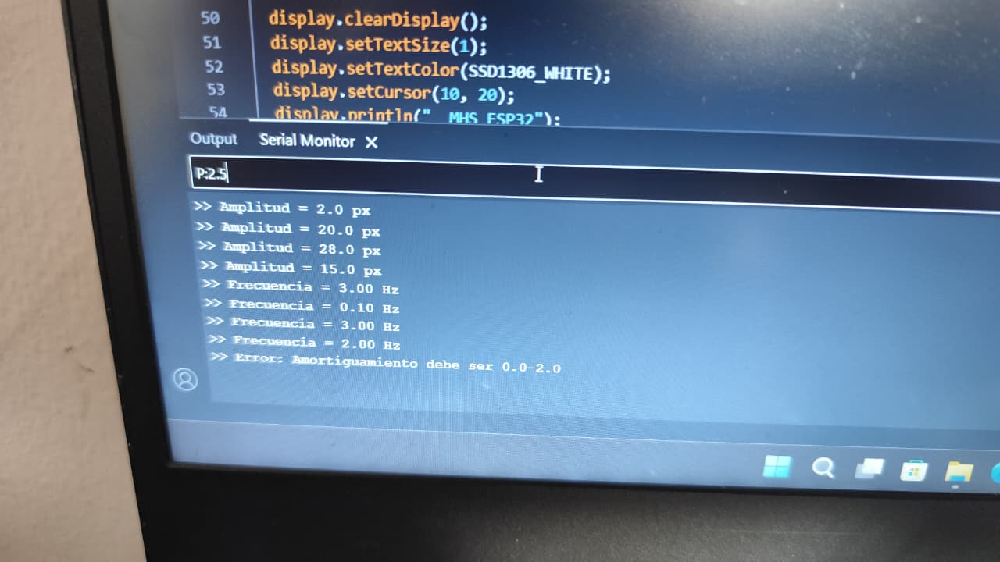
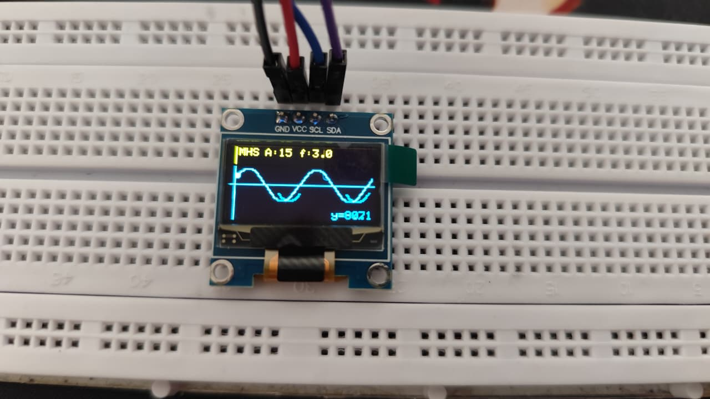
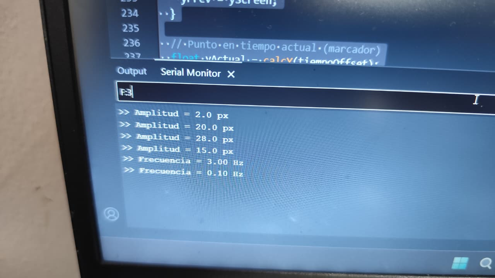
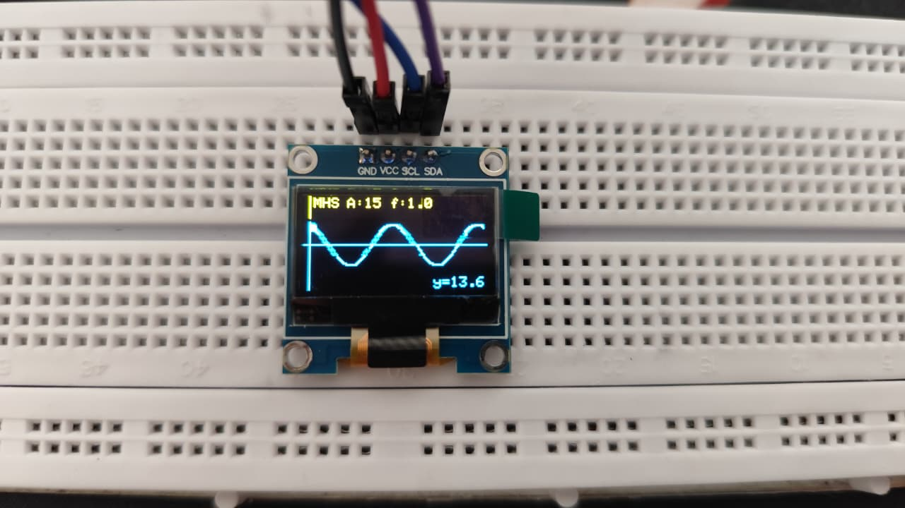
VIII. Proceso de Creación
- Diseño del circuito: Se estableció el uso exclusivo de la pantalla OLED SSD1306 comunicada por I2C (pines 21 y 22) para un enfoque centrado en matemáticas y algoritmos de renderizado.
- Programación Gráfica: Se desarrolló la función
calcY()ydibujarGrafica()que mapea una ventana temporal móvil (2 períodos) a los 128 píxeles horizontales de la pantalla. - Implementación Serial: Se incorporó un parser de caracteres capaz de leer instrucciones paramétricas como
A:25oF:2.5asincrónicamente con la gráfica. - Optimización Visual: Se introdujo un algoritmo de relleno vertical para las curvas de la onda, logrando que el seno luzca suave a pesar de la baja resolución de la OLED.
IX. Simulación
X. Conclusiones
- El proyecto demuestra la simulación visual de un fenómeno físico fundamental (MHS) sobre hardware embebido de bajo costo, logrando una representación gráfica fluida a 30 FPS.
- La implementación directa de la ecuación de amortiguamiento permite observar en tiempo real el efecto de cada parámetro sobre la forma de la onda (decayendo su envolvente).
- La técnica de renderizado punto a punto con interpolación vertical (llenado) es esencial para pantallas primitivas; de no usarse, curvas rápidas quedarían punteadas y difíciles de visualizar.
- Este proyecto sienta las bases para construir instrumentación virtual como osciloscopios digitales o analizadores de espectro en interfaces limitadas.
XI. Ecuaciones
| Ecuación | Descripción | Referencia |
|---|---|---|
| $y(t)=A\sin(2\pi ft+\varphi)$ | Movimiento Armónico Simple Ideal | Ir a sección |
| $y(t)=Ae^{-\beta t}\sin(2\pi ft+\varphi)$ | Movimiento Armónico Amortiguado | Ir a sección |
Sensor de Distancia Ultrasónico con Pantalla OLED
I. Introducción
Este documento describe el proyecto "Sensor de Distancia Ultrasónico con Pantalla OLED", en el cual se utiliza un microcontrolador ESP32 junto con un sensor ultrasónico HC-SR04 para medir la distancia a objetos cercanos. La distancia medida se muestra simultáneamente en dos interfaces: el monitor serial del computador (a través del puerto USB) y una pantalla OLED SSD1306 de 128x64 píxeles conectada mediante el protocolo de comunicación I2C.
El sensor HC-SR04 emite pulsos ultrasónicos a una frecuencia de 40 kHz y mide el tiempo que tarda el eco en regresar tras rebotar en un objeto. A partir de este tiempo, el microcontrolador calcula la distancia utilizando la velocidad del sonido en el aire. Este principio físico, conocido como eco-localización, es el mismo que emplean los murciélagos y los sistemas de sonar marítimo.
II. Objetivo del Proyecto
Implementar un sistema de medición de distancia por ultrasonido que:
- Utilice el sensor HC-SR04 para medir distancias en un rango de 2 a 400 cm.
- Calcule la distancia en centímetros a partir del tiempo de vuelo de la onda ultrasónica.
- Muestre la distancia medida en el monitor serial del Arduino IDE a 115 200 baudios.
- Visualice la distancia en tiempo real en una pantalla OLED SSD1306 de 0.96 pulgadas.
- Actualice las lecturas cada 500 ms para una visualización fluida.
III. Materiales Necesarios
| Aspecto | Cant. | Componente | Especificación |
|---|---|---|---|
| 1 | ESP32 Dev Module | Microcontrolador dual-core con Wi-Fi/Bluetooth | |
| 1 | Sensor HC-SR04 | Sensor ultrasónico de distancia (2-400 cm) | |
| 1 | Pantalla OLED SSD1306 | Display 128x64 px, I2C, 0.96" | |
| 1 | Protoboard | Placa de pruebas de 830 puntos | |
| Varios | Cables jumper | Macho-macho y macho-hembra | |
| 1 | Cable USB | Para programación y alimentación |
IV. Esquema de Conexión
El circuito conecta el sensor HC-SR04 y la pantalla OLED SSD1306 al ESP32. El sensor utiliza dos pines digitales (GPIO2 para Trig y GPIO4 para Echo), mientras que la pantalla OLED se comunica por el bus I2C estándar del ESP32 (GPIO21 para SDA y GPIO22 para SCL). Ambos dispositivos se alimentan con 3.3V del ESP32 (el HC-SR04 también puede funcionar con 5V).
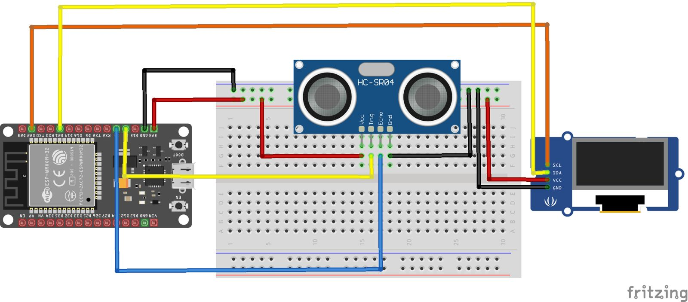
Diagrama de Conexiones
| Componente | Pin | ESP32 GPIO |
|---|---|---|
| HC-SR04 | VCC | 3.3V (o 5V) |
| HC-SR04 | Trig | GPIO2 |
| HC-SR04 | Echo | GPIO4 |
| HC-SR04 | GND | GND |
| OLED SSD1306 | VCC | 3.3V |
| OLED SSD1306 | GND | GND |
| OLED SSD1306 | SDA | GPIO21 (I2C SDA) |
| OLED SSD1306 | SCL | GPIO22 (I2C SCL) |
V. Código Fuente
A continuación se presenta el código completo del proyecto, que combina la lectura del sensor ultrasónico con la visualización en pantalla OLED mediante las librerías de Adafruit.
#include <Wire.h>
#include <Adafruit_GFX.h>
#include <Adafruit_SSD1306.h>
#define SCREEN_WIDTH 128
#define SCREEN_HEIGHT 64
#define OLED_RESET -1
const int trigPin = 2;
const int echoPin = 4;
Adafruit_SSD1306 display(SCREEN_WIDTH, SCREEN_HEIGHT, &Wire, OLED_RESET);
void setup() {
Serial.begin(115200);
if(!display.begin(SSD1306_SWITCHCAPVCC, 0x3C)) {
Serial.println("Fallo OLED");
while(true);
}
display.clearDisplay();
pinMode(trigPin, OUTPUT);
pinMode(echoPin, INPUT);
}
void loop() {
digitalWrite(trigPin, LOW);
delayMicroseconds(2);
digitalWrite(trigPin, HIGH);
delayMicroseconds(10);
digitalWrite(trigPin, LOW);
long duration = pulseIn(echoPin, HIGH);
float distance = duration / 58.4;
Serial.print("Distancia: ");
Serial.print(distance);
Serial.println(" cm");
display.clearDisplay();
display.setTextSize(2);
display.setTextColor(SSD1306_WHITE);
display.setCursor(0, 0);
display.println("Distancia:");
display.print(distance);
display.println(" cm");
display.display();
delay(500);
}Análisis del Código
- Librerías Utilizadas:
Wire.hpara I2C,Adafruit_GFX.hpara las primitivas gráficas yAdafruit_SSD1306.hpara la pantalla OLED. - setup(): Inicializa la comunicación serial, la pantalla OLED en la dirección 0x3C y configura los pines Trig y Echo.
- loop(): Genera un pulso de 10 $\mu$s en Trig. Usa
pulseIn()para medir la duración del eco y calcula la distancia cont/58.4. Luego actualiza el monitor serial y la pantalla OLED.
VI. Principio de Funcionamiento
El Sensor Ultrasónico HC-SR04
El HC-SR04 utiliza ondas ultrasónicas (sonido inaudible a 40 kHz) para medir distancias. El sensor emite un pulso, y el sonido viaja hasta un objeto, rebota y regresa al sensor (eco). La distancia se calcula basándose en la velocidad del sonido en el aire y el tiempo de vuelo (Time of Flight, ToF).
Con la velocidad del sonido $v_s \approx 343 \text{ m/s} = 0.0343 \text{ cm/}\mu\text{s}$, sustituimos:
Que es la fórmula utilizada en el código.
VII. Fotografías del Montaje
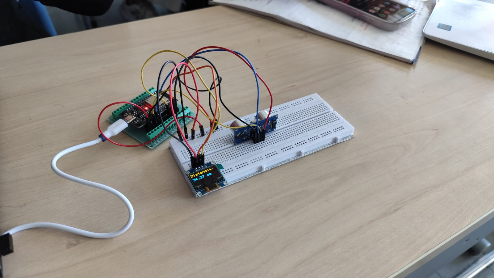
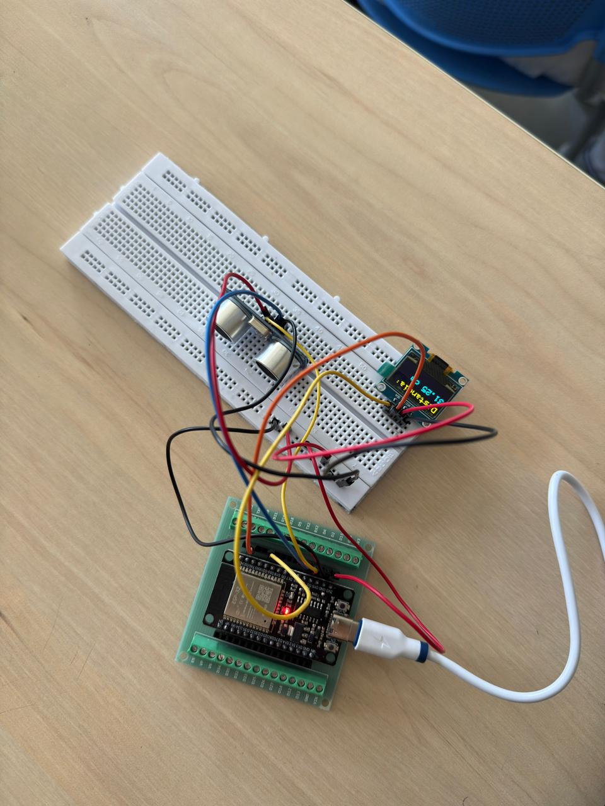
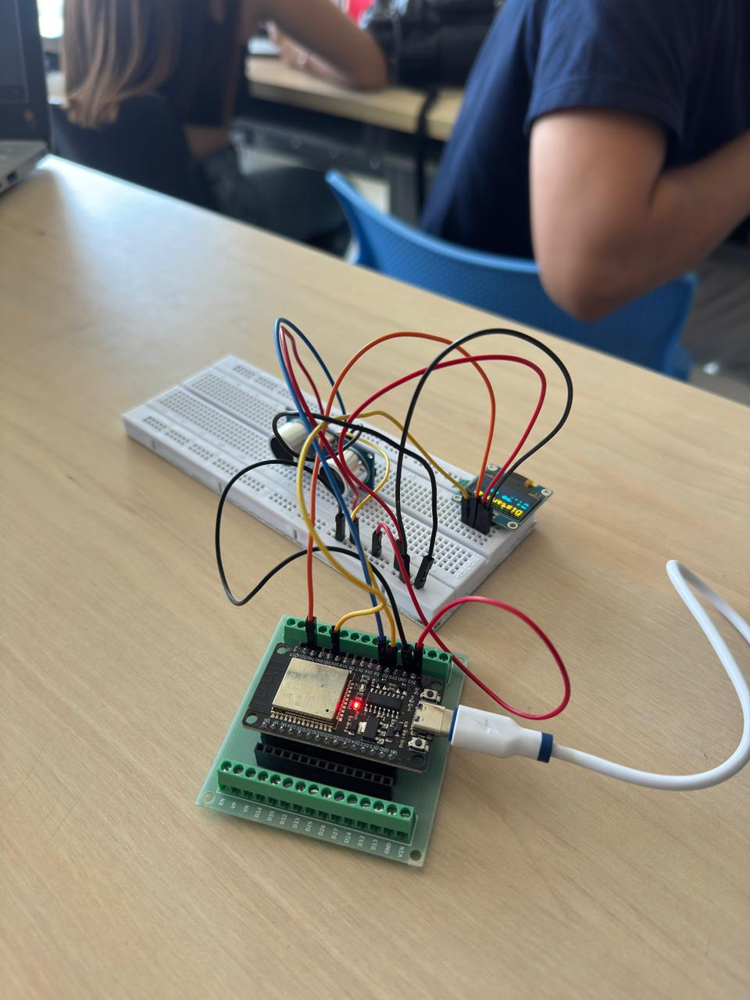
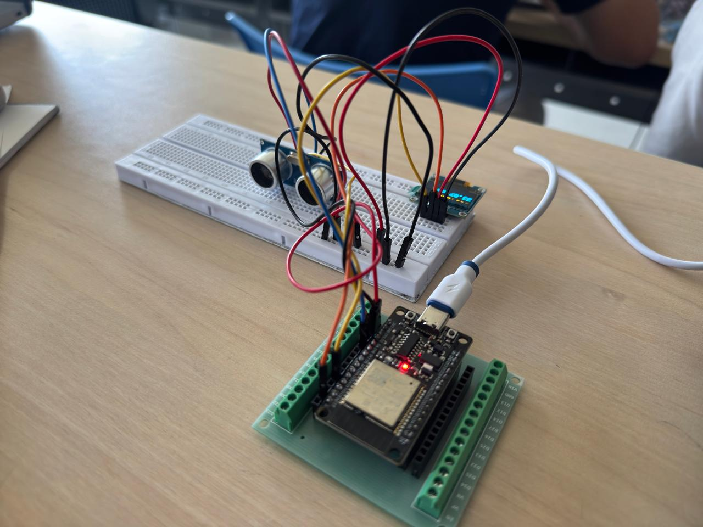
VIII. Videos de Funcionamiento
IX. Proceso de Creación
- Montaje del sensor HC-SR04: Se conectó a la protoboard con pines Trig (GPIO2) y Echo (GPIO4) del ESP32 y se probó su lectura por puerto serial.
- Conexión de la pantalla OLED: Se agregó el display SSD1306 al bus I2C (SDA=GPIO21, SCL=GPIO22).
- Integración de Software: Se fusionó la lectura del pulso usando
pulseIn()con las libreríasAdafruit_SSD1306para imprimir el resultado convertido a centímetros. - Ajustes finales: Configuración de
delay(500)para lograr una actualización fluida de la pantalla.
X. Conceptos Técnicos Clave
- Velocidad del Sonido y Temperatura: A 20°C la velocidad es 343.4 m/s. El divisor 58.4 proporciona excelente precisión en rango de 15 a 25 °C.
- Función
pulseIn(): Mide la duración de un pulso de nivel HIGH en microsegundos, usando el contador de ciclos del ESP32.
XI. Conclusiones
- El proyecto demuestra la integración exitosa de un sensor ultrasónico HC-SR04 con una pantalla OLED SSD1306 controlados por el ESP32, logrando un sistema autónomo.
- La comunicación I2C permite añadir una interfaz visual con solo dos cables (SDA/SCL), optimizando los recursos del ESP32.
- La visualización dual (monitor serial y pantalla OLED) permite utilizar el dispositivo tanto para depuración en PC como módulo autónomo portátil.
- Las librerías Adafruit GFX facilitan presentar resultados visuales formidables de manera muy sencilla.
XII. Ecuaciones
| Ecuación | Descripción | Enlace |
|---|---|---|
| $d = \frac{v_s \times t}{2}$ | Distancia por eco-localización | Ir a sección |
| $d\,[\text{cm}] \approx \frac{t}{58.4}$ | Cálculo de distancia en código | Ir a sección |
Lista Consolidada de Materiales
| Aspecto | Componente | Cant. Total | Proyectos donde se utiliza |
|---|---|---|---|
| ESP32 Dev Module | 1 | Todos | |
| Protoboard 830 puntos | 1 | Todos | |
| Cable USB (Micro USB o Tipo C) | 1 | Todos | |
| Cables Jumper (M-M, M-H) | Varios | Todos | |
| LED (Varios colores) | 1 - 3 | On/Off, Potenciometro (variantes) | |
| Resistencia 220 Ohm | 1 - 3 | On/Off, Potenciometro (variantes) | |
| Potenciometro 10k Ohm | 1 | Potenciometro, BT, WiFi, ThingSpeak | |
| Sensor DHT22 | 1 | Temperatura (ambas variantes) | |
| Resistencia 10k Ohm (Pull-up) | 1 | Temperatura (ambas variantes) | |
| Pantalla OLED SSD1306 128x64 | 1 | Temp. con termómetro, Mov. Armónico, Sensor de Distancia | |
| Sensor Ultrasónico HC-SR04 | 1 | Sensor de Distancia |